Build Robbi
Warning
Very early version, far from perfect. This project is provided as-is for experienced makers willing to invest several hours in tinkering, troubleshooting and fixes. The design, components and software will change; backward compatibility cannot be guaranteed.

A small Raspberry Pi robot with a face, a camera, a voice and two encoder-equipped wheels. Build the electronics on the bench, fit them into the printed body, then bring Robbi's movement and conversation to life.
Watch the build
11:46 · 4K · silent, with on-screen instructions. Follow the assembly in the video and use the written steps below for parts, wiring and calibration.
Bench tests · Motors and wheels · Head assembly · Final checks
Important
Build guide in progress. Includes the parts and variant photos, manufactured PCB settings, connector pinout, assembly STL and illustrated build sequence. Remaining gaps are the tested print recipe, exact fasteners at each mounting point, motor-cable identification and measured power/load limits. See the release checklist.
Start here
Follow the order below. Finish the bench tests before mounting the electronics in the shell.
| Step | What you will do |
|---|---|
| 01 · Parts | Order the matching board, modules, motors and hardware. |
| 02 · Preparation | Gather tools, prepare printed parts and check the fits. |
| 03 · Software | Flash Bookworm, run one installer command and finish in the dashboard. |
| 04 · Bench tests | Test the battery-powered bare PCB, join it to the Pi, then check the peripherals. |
| 05 · Assembly | Mount the motors, Pi/back panel and head; fit the wiring, ToF sensor and side-panel inserts. |
| 06 · Calibration | Follow IMU calibration, check wheel movement and test STT, LLM and TTS. |
| Troubleshooting | Isolate a fault without changing several things at once. |
What you are building
| Core | Hardware |
|---|---|
| Computer | Raspberry Pi Zero 2 W with a soldered 40-pin header |
| Main board | Custom Robbi 2026-09 PCB: power circuit, motor driver, speaker amplifier and IMU |
| Movement | Two matching 3 V / 75 RPM N20 motors with encoders |
| Face and voice | 1.69-inch SPI display, USB microphone and miniature speaker |
| Vision and distance | IMX219 camera and one forward-facing VL53L1X-family ToF module |
The second ToF connector and servo outputs are unused in this build. Use the PCB and print revisions listed in this guide together.
Keep these nearby
- Parts list — quantities, variants and purchase links.
- Wiring reference — top-view connector drawing, numbered pins, display power-pin swap and power test points.
- Build record — record your revisions, measurements and test results.
- PCB manufacturing files and enclosure model.
- One-command installation — minimal terminal setup, automatic startup and one generated configuration.
- Release readiness — runtime publication and fresh-card testing status.
Tip
Keep power disconnected while changing wiring or fitting parts. For the first powered motor checks, raise both wheels. Floor tests need a clear, level area away from edges: the forward ToF sensor does not provide cliff detection.
Repository layout
Keep the Markdown files, assets/ and hardware/ together so the relative links work on GitHub. The repository root contains the runtime: pyproject.toml, src/, config/, web/, apps/ and tools/. Installation is covered in Software.
The illustrated Markdown guide is the single maintained manual. Separate browser, commissioning and service-template editions have been retired; the installer generates the working settings and startup service.
1. Choose the parts
Match the PCB, enclosure and motor revisions before ordering. Choose the exact variants below; a listing may open with a different option selected. Purchase links below lead to AliExpress, except the official Raspberry Pi page. New reference listings were found through indexed product pages; live stock, seller authenticity and delivery to your country have not been verified. Confirm the exact variant before ordering.
Custom board: order one assembled board from the approved release, with matching Gerbers, assembly BOM and placement file. The board already carries the motor driver, amplifier, IMU and power electronics. Separate DRV8833, MAX98357A, IMU, charger or boost breakout boards are not additions to this custom-PCB build. Confirm which through-hole connectors the assembler fits; the supplied BOM marks the underside 40-pin socket for hand soldering. Use the current manufacturing package and ordering notes; remaining electrical documentation is listed in the release checklist.

Order list
| Qty | Part | Exact choice | Purchase link |
|---|---|---|---|
| 1 | Assembled Robbi custom PCB | Custom four-layer board • Fabrication + component assembly • Quote required | AliExpress · quote |
| 1 | Raspberry Pi Zero 2 W | 1 board • Wi-Fi • Header already soldered | Raspberry Pi |
| 1 | High-quality microSD card | 32 GB minimum • 64 or 128 GB recommended • A1 or A2 • Class 10 / UHS-I | AliExpress |
| 2 | N20 motors with encoders | 2 matching motors • 3 V • 75 RPM • Encoders | AliExpress |
| As required | MR128ZZ miniature bearings | MR128ZZ • 8 mm bore • 12 mm outside • 3.5 mm thick | AliExpress |
| 1 | TOF400C-VL53L1 sensor | 1 module • Select TOF400C-VL53L1 | AliExpress |
| 1 | TENSTAR ROBOT SPI display | 1 display • 1.69 inch • 240 × 280 • 8 pins | AliExpress |
| 1 | IMX219 wide-angle camera | 1 camera • IMX219 • 130° or 160° lens • CSI | AliExpress |
| 1 | 20 mm miniature speaker | 1 speaker • 20 mm diameter • 8 Ω / 8R • 0.5 W | AliExpress |
| 1 | 18650 holder with wires | 1 holder • Single cell • With wires | AliExpress |
| 1 | 18650 rechargeable cell | 1 cell • About 3000 mAh • Genuine high-drain Li-ion | AliExpress |
| 1 | USB-C 18650 charger | 1 charger • External slot charger • USB-C input | AliExpress |
| 1 | Micro-USB OTG adapter — LEFT | 1 adapter • LEFT • Micro-USB male → USB-A female | AliExpress |
| 1 | Mini USB microphone | 1 microphone • USB-A • Built-in microphone | AliExpress |
| 1 | VH3.96 battery connector | 1 cable • VH series • 3.96 mm pitch • 2P | AliExpress |
| As required | M2 heat-set inserts | M2 internal thread • Outside size must match the model | AliExpress |
| As required | M2 screws and nuts | M2 • Lengths and quantities follow the assembly files | AliExpress |
| As required | M3 × 14 mm screws | Additional linked hardware • M3 • 14 mm • 50-piece pack | AliExpress |
| As required | Female-to-female jumper wires | F–F • Sockets at both ends • 2.54 mm headers | AliExpress |
| 1 | 16 cm Pi Zero camera adapter ribbon | 16 cm; 22-pin / 0.5 mm pitch to 15-pin / 1.0 mm pitch | AliExpress |
| Assortment | Heat shrink or insulation tape | Small assortment / one roll • Electrical insulation | AliExpress |
| Access to 1 set | Soldering equipment | Use an existing setup or buy one • Electronics soldering | AliExpress |
| 1 set | Precision screwdriver and bits | 1 set • Hex H1.5 / H2.0 / H2.5 • Small Phillips bits | AliExpress |
| Access to 1 set | Hot glue and glue gun | Access to a glue gun • Matching glue sticks | AliExpress |
| 1 complete print set | 3D printing access or service | One complete set of Robbi’s printed parts • Custom quote required | AliExpress · quote |
“As required” means the count depends on the assembly; pack sizes are not the number used in one robot. Confirm hardware quantities and screw lengths from the released assembly files. For the custom PCB, use the manufacturing package and request a quote for four-layer fabrication and assembly; the service listing is not a ready-made Robbi board.
Also provide a suitable USB power source/cable for the isolated Pi setup, a microSD reader, a multimeter and the hand tools in preparation. Battery-lead protection and PCB spacing hardware must be specified in the release; they are not optional omissions just because their exact parts are unresolved.
Recognise the important variants
| Motor and cable | Display pin labels | Forward ToF |
|---|---|---|
 |
 |
 |
| Select 3 V / 75 RPM, two motors, with cables. | Select 240 × 280, eight pins. Match signals when wiring; VCC/GND differ from the custom PCB's order. | Select TOF400C-VL53L1X. Keep the optical opening unobstructed. |
| OTG adapter | Battery cable contact type | M2 screw head |
|---|---|---|
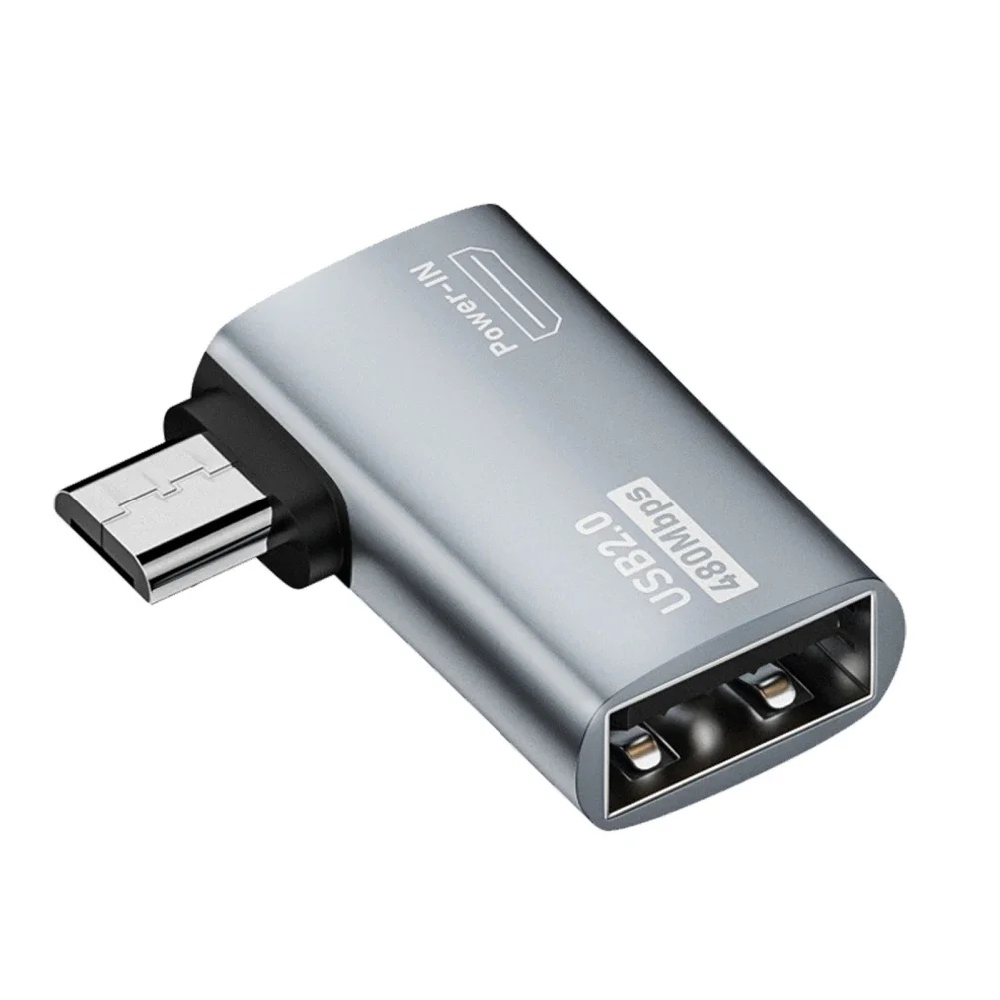 |
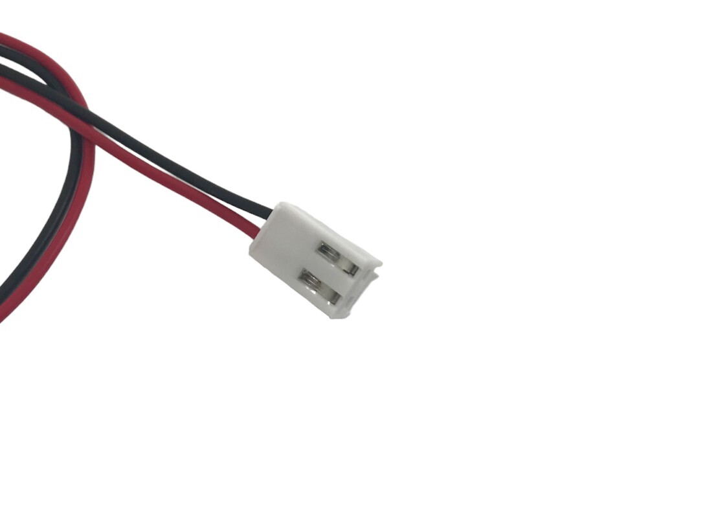 |
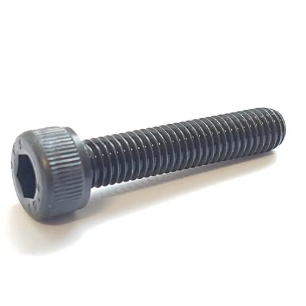 |
| Left-angle, data-capable. | VH3.96, 2-pin, female socket contacts, with leads. | Cylindrical socket head, not countersunk. M3 screws are 14 mm long; 50 is the pack count. |
The reference pictures identify shape and pin labels. For voltage, speed, size and quantity, use the order table above.
Check deliveries before building
- Count two matching 3V75RPM encoder motors and their matching cables. Check the label and rear encoder board, not just the product title.
- Confirm Zero 2 W, with the 40-pin header already soldered.
- Confirm the 1.69-inch, eight-pin, 240 × 280 SPI display and the exact ToF board outline.
- Check the camera ribbon: use 16 cm with different widths at its two ends.
- Check the battery plug: VH3.96, 2-pin, female socket contacts, and matching polarity.
- Check screws by their actual dimensions. M3 × 14 mm and M2 socket head are the required selections. The purchased assortments do not establish the number or M2 length used at each mounting point.
- Keep cells and all power leads disconnected while checking fit.
Selection details
Expand the component-by-component buying notes
Raspberry Pi Zero 2 W
The exact Zero 2 W model, with Wi-Fi and the 40-pin GPIO header already installed and soldered. Ask for 已焊接排针; a loose header in the box is not enough.
Avoid: The older Zero W / Zero WH, an unsoldered board, or a listing labelled only “Zero 2” without confirmation of Wi-Fi and the exact model.
High-quality microSD card
Choose a high-quality microSD card with at least 32 GB. 64 or 128 GB is recommended for extra room. Look for A1 or A2 and Class 10 / UHS-I; no particular brand is required. Buy from a reputable seller. The linked card is an example, not a brand requirement. The small microSD card goes into the Pi; an SD adapter is optional for your computer.
Avoid: Full-size SD cards, an empty adapter, unbranded cards or suspiciously cheap counterfeits. Advertised reader speeds are not the speed you will get on the Pi.
N20 motors with encoders
Select “3V75RPM”. Buy two identical N20 / JGA12-N20 units with rear encoder boards. Confirm matching encoder cables are included.
Avoid: Plain N20 motors without encoders; 6 V or 12 V versions; 750 RPM, 150 RPM or another speed.
MR128ZZ miniature bearings
Select “MR128ZZ 8x12x3.5mm”. Check all three dimensions: 8 mm inner diameter, 12 mm outer diameter and 3.5 mm width. The linked listing sells a 10-piece pack; use the assembly instructions for the number needed.
Avoid: MR128-2.5 (only 2.5 mm thick), MR148ZZ (14 mm outside), open or rubber-sealed variants, or flanged bearings in place of this plain MR128ZZ.
TOF400C-VL53L1 sensor
Choose “TOF400C-VL53L1”. Look for the TOF400C-VL53L1X board marking. Match its outline, mounting holes and pin labels; check whether headers arrive soldered.
Avoid: TOF050C / VL6180 or TOF200C / VL53L0X. Another VL53L1X module can have a different board shape and pinout.
TENSTAR ROBOT SPI display
Select “1.69 Inch”. Look for the eight-pin SPI board, ST7789-family controller and 240(RGB) × 280 marking on the display board.
Avoid: 1.54-inch or 1.9-inch variants; 240 × 240 or 240 × 320 panels; a different pin count or interface. Ignore the listing’s incorrect automatic 320 × 240 summary.
IMX219 wide-angle camera
An IMX219 camera with a 130° or 160° lens and Raspberry Pi CSI support. Check board size, mounting holes and lens clearance against the printed mount.
Avoid: OV5647 / 5 MP cameras, narrow-angle lenses, USB webcams or bulky IR assemblies that do not fit the mount.
20 mm miniature speaker
Select “20mm”, and verify 8R / 8 Ω and 0.5 W. Prefer attached leads; check that the plug matches the build or can be reterminated.
Avoid: 23 / 28 / 30 / 36 mm or larger versions, 4 Ω speakers, buzzers or powered USB speakers.
18650 holder with wires
Select “1 Section with line”. Check the holder’s outside dimensions against the printed enclosure and its supported cell length.
Avoid: The version without wires, a two- to four-cell holder, or an AA / 14500 holder. A holder alone is not a charger.
18650 rechargeable cell
A traceable genuine single 18650 Li-ion cell with dimensions, charge/discharge limits and protection compatible with the approved power circuit. Molicel P30B is a reference example, not an instruction to fit an unprotected cell to an unverified circuit.
Avoid: Anonymous cells with implausible capacity labels, reclaimed cells, 21700 / 14500 sizes or LiFePO₄. A longer protected/button-top cell may not fit.
USB-C 18650 charger
A USB-C charger for 3.6 / 3.7 V Li-ion 18650 cells, charging to 4.2 V. Check the actual input socket and use a charge current within the cell manufacturer’s limit. The linked XTAR ANT MC1 Plus is a USB-C reference example.
Avoid: An older micro-USB version, a bare TP4056 board, an empty holder, or a charger intended only for NiMH or 1.5 V batteries.
Micro-USB OTG adapter — LEFT
Choose “Left” in the original listing. It must support OTG and data. For other sellers, check that the plug direction leaves the microphone inside the body with the USB data port accessible.
Avoid: “Right”, USB-C, mini-USB or charge-only adapters. Left/right naming can vary between sellers.
Mini USB microphone
A complete microphone dongle with driver-free USB Audio / Linux / Raspberry Pi compatibility. Match the small physical size shown.
Avoid: A USB Bluetooth receiver, a sound card with only empty audio sockets, a 3.5 mm-only mic, or an I²S microphone breakout.
VH3.96 battery connector
Select “2P”. Buy the VH3.96 housing with crimped wires attached; the linked listing offers 20 cm leads. Check the latch, mating socket and polarity against the PCB. Required cable end is FEMALE, with recessed socket contacts and no exposed pins. Verify polarity with a meter; wire colour alone is insufficient.
Avoid: 3P–10P, a bare housing, or a PCB header alone. PH2.0, XH2.50 / 2.54 and other “JST 2-pin” families are not interchangeable.
M2 heat-set inserts
M2 inserts intended for heat installation. Match outer diameter, length and quantity to the printed parts. The linked assortment contains several sizes, including M2.
Avoid: M2.5 / M3 inserts, ordinary hex nuts or wood inserts. “M2” specifies only the thread; it does not guarantee the outside dimensions fit.
M2 screws and nuts
Choose the M2 option (“482pcs M2” in the linked listing). Check required screw lengths and head style against the assembly instructions; the pack count is not the robot’s screw count. Use cylindrical socket-head screws, not countersunk. Final lengths and quantities remain to be supplied.
Avoid: M2.5 / M3 kits by mistake, self-tapping screws, or screws that are too long for the mounting position.
M3 × 14 mm screws
Select “M3 50 pcs” and “x14mm”. These are socket-head machine screws. Keep this item separate from the M2 screws and inserts. The length is 14 mm. Fifty is the pack count, not a length or build quantity.
Avoid: Using M3 screws in M2 threads, or confusing 14 mm length with an M14 thread. Fifty pieces is the selected pack size, not a confirmed build quantity.
Female-to-female jumper wires
Choose F-F / Female-Female / 母对母. Both ends must have sockets. Select a length and wire count that suit the wiring route without tension.
Avoid: M-M / 公对公 or M-F / 公对母. The listing’s default selection may be the wrong type.
16 cm Pi Zero camera adapter ribbon
Use a 16 cm Pi Zero adapter ribbon, with a 22-pin narrow end and a 15-pin wide end. Check both connector widths and contact orientation; do not buy 15-to-15 or 22-to-22 by mistake.
Avoid: A different length or connector type without checking the fit. Verify that the selected listing option is 16 cm.
Heat shrink or insulation tape
Heat-shrink sizes that fit over the joints and shrink snugly, or tape explicitly rated for electrical insulation. No particular brand is required.
Avoid: Packing tape, masking tape, conductive copper tape, or tubing too large to grip after shrinking.
Soldering equipment
A temperature-controlled iron, suitable tip, stand, solder wire and electronics flux. Choose a plug and input voltage suitable for your local mains supply.
Avoid: 110 V-only equipment, plumbing acid flux, a welding machine, or a hot-air-only tool in place of an electronics soldering iron.
Precision screwdriver and bits
Check the bit list includes H1.5 and H2.5 hex bits: the DIN 912 socket-head screws shown use 1.5 mm hex for M2 and 2.5 mm for M3. H2.0 and small Phillips bits make the set more versatile. Match the bit to the actual screw head.
Avoid: Phillips-only or Torx-only sets, kits missing the small hex sizes, or a large powered driver that can strip these tiny screws.
Hot glue and glue gun
Glue sticks whose diameter matches the gun. If buying a mains gun, choose a plug and voltage suitable for your local mains supply. Check whether sticks are included.
Avoid: Sticks in the wrong diameter, or ordering only a gun when you also need glue. Do not substitute superglue or conductive adhesive without checking the assembly.
3D printing access or service
Send the confirmed printable parts, quantities, scale, material and settings for a custom quote. Agree the printing process and tolerances before ordering. The listing price is not the cost of a full Robbi print set. Use the printing notes to prepare the files; the complete assembly STL is not a single printable part.
Avoid: A random robot shell, resized parts or an incomplete print order. Check compatibility before changing material or printing process.
2. Prepare tools and printed parts
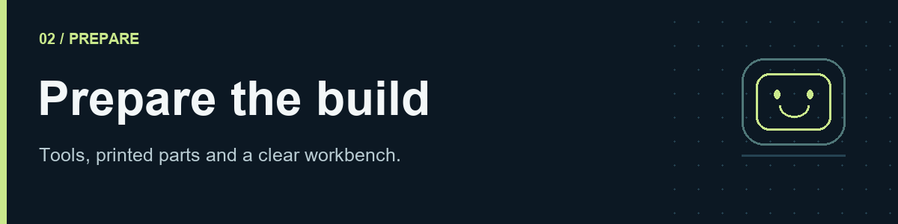
Guide home · ← Parts · Software →
Tools
| Tool | Used for |
|---|---|
| 3D printer, makerspace or print service | Body, head, wheels and internal mounts |
| Temperature-controlled soldering iron, stand, solder and electronics flux | Wire joints, any omitted through-hole headers and heat-set inserts with an appropriate tip |
| Small manual driver; H1.5, H2 and H2.5 hex bits; small Phillips bits | Fasteners; check the actual head before using a bit |
| Flush cutters, wire stripper, tweezers and small pliers | Harness preparation and handling small parts |
| Heat-shrink tubing and suitable heat source | Insulating individual wire joints |
| Hot-glue gun and matching sticks | Securing the forward ToF sensor and limited wire strain relief |
| Multimeter with continuity and DC voltage ranges | Finding shorts, checking polarity and measuring rails |
| Knife/deburring tool, small file and calipers | Removing supports and checking fits |
| microSD reader and computer | Flashing the operating system and copying the release |
| Tape measure, tape and a flat test area | Wheel and motion calibration |
| Optional current-limited bench supply | Controlled first power-up with the release's specified input and limit |
Use an uncluttered, nonconductive work surface and a small tray for screws. Ventilate soldering work. Do not solder directly onto the 18650 cell; prepare the holder leads with the cell removed.
Print the matching release
Download robo_4_astra.zip and extract robo_4_astra.stl on your computer. The archive contains the original assembly STL without changes to its geometry. It contains an assembly, modelled purchased hardware and separate wheel shapes, rather than a prepared print plate. See the model notes before slicing. Export/identify the actual printable bodies and confirm the scale against a known dimension. Print the confirmed millimetre-scale parts at 100%. Scaling the shell to compensate for a tight fit also changes the bearings, board mounts and screw locations.
The model inventory identifies the shell, panels, head pieces and wheel geometry already present in this file.
Use this checklist while separating printable geometry from the purchased electronics in the assembly STL. The shell, two side panels, head front/rear, wheel centre and tread ring are identifiable; print materials and the successful slicer settings are not stored in STL:
| Group | Inspect before assembly |
|---|---|
| Main body and closing panel(s) | Both axle openings, motor seats, board mounts, battery access and front apertures |
| Head/face bezel and rear/joint parts | Screen aperture, display mounting features and cable passage |
| Two wheels and their tread/tyre parts | Shaft fit, concentricity, tread fit and body clearance |
| Pi/PCB carrier | Hole locations, underside insulation and port access |
| Camera, speaker and ToF mounts | Exact module outline, lens/window clearance and connector access |
| Bearing and joint retainers, if separate | Bearing seating depth and unobstructed motion |
Do not use the motion-studio robbi-body.stl and robbi-head.stl files as a complete print kit: the available preview models do not establish all separate printable parts or their counts.
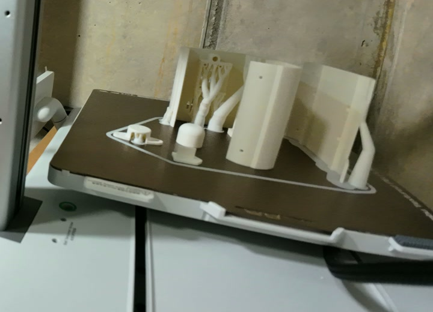
Illustrative print layout. Use the released parts and their specified print orientations for your build.
The supplied STL does not contain slicer settings. Add the release's slicer project for orientation, supports, layer height, walls, infill and material. Use the settings for the released parts rather than guessing an orientation or material. Print a small insert/bearing fit sample first if changing printer, material or slicer settings.
Clean and dry-fit
- Remove supports and loose strings, particularly inside wire passages and screw holes.
- Deburr mating surfaces without enlarging bearing seats or motor pockets.
- Lay each component in its mount with no battery installed. Check that plugs can still be inserted and removed.
- Place the PCB carrier inside the body and close the panels loosely. Check clearance above the board's tall components and header pins.
- Sort screws by diameter and length. A screw should engage its intended thread without bottoming out against a board, motor or cell.
Inserts and bearings
Check the heat-set inserts now, but fit the side-panel inserts at the step shown in Assembly. These provide the threads for fastening the side panels to the main body. M2 specifies only the thread: outside diameter and length must match the printed pockets. Test the fit and heated-tool technique on a spare printed boss first.
The specified bearing is MR128ZZ, 8 × 12 × 3.5 mm. It sits in the circular body recess around the motor-shaft opening; the new close-ups show both the seat and the matching D-shaped wheel hub. Press against the outer race when fitting a bearing into its printed bore. Align the wheel hub's flat with the shaft flat before pressing the wheel on; do not hammer through the bearing or onto the gearbox shaft. Stop if the plastic starts to split or distort.
Checkpoint: the shell closes without force, all modules fit, and there is a clear route for the head harness and camera ribbon. The battery is still out.
3. Install the software
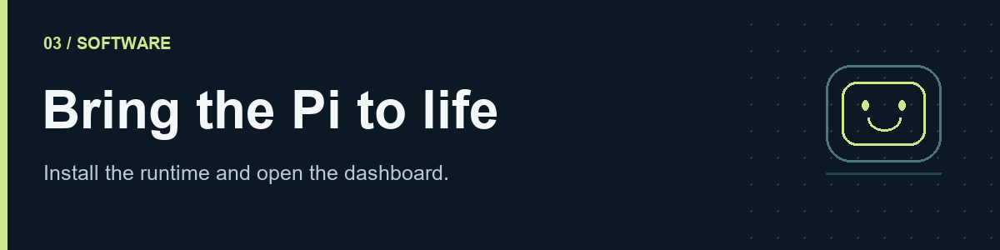
Guide home · ← Preparation · Bench tests →
Early version, for experienced makers. Expect tinkering, fixes and several hours of work. Hardware, components and software will change; backward compatibility is not guaranteed. Provided as-is.
The installer is hosted at ace-builder/Robbi. The runtime release is awaiting publication while its assets are being prepared. Until that release exists, the hosted installer exits with an explanation and makes no system changes. It does not download private robot code.
1. Prepare the microSD card
Use Raspberry Pi Imager to select Raspberry Pi OS (Legacy) Lite, 64-bit, Bookworm for a Pi Zero 2 W. Check the codename: Trixie/Python 3.13 is not supported by this runtime yet. Set your own Linux username/password or SSH key, hostname (for example robbi), Wi-Fi country, 2.4 GHz Wi-Fi and SSH in Imager. Initial networking must work before you can connect over SSH.
Boot the Pi separately on its normal USB supply with the custom board and motors disconnected. From your computer:
ssh YOUR_USER@robbi.local
Use the address from your router if .local does not resolve. Imager documentation: first boot and remote access.
2. Run the installer
Run as your normal Linux user, without sudo in front of the command. The installer requests sudo for system packages, device access and the service.
curl -fsSL --proto '=https' --tlsv1.2 https://raw.githubusercontent.com/ace-builder/Robbi/main/install.sh -o /tmp/robbi-install.sh && bash /tmp/robbi-install.sh
To inspect it first, download the file, read it, then run bash /tmp/robbi-install.sh. A future tagged release can be selected with --version TAG. --plan describes the steps without installing; with the hosted script it still requires a downloadable runtime. An unpacked, audited release can be used with bash install.sh --source /path/to/release/robbi-v2.
The installer verifies SHA-256, checks archive paths and a per-file manifest, installs apt dependencies, and creates ~/robbi-v2/.venv using the OS camera and numerical libraries. It refuses unsupported systems and unrelated existing installations. Rerunning the same release resumes completed steps. This is a fresh-install command, not an updater for a working robot.
Checksums detect corruption; trust still comes from the repository/release publisher. Review the script and release you choose.
3. Answer the short setup prompts
- Enter the name Robbi should use for you. Your Linux login remains the account created in Imager.
- Choose a dashboard password, or press Enter for a generated one and save it; disabling sign-in requires explicitly trusting every device on the network.
- Keep the current Wi-Fi, or save another Personal network for the next reboot. The wizard checks the current connection; it cannot prove the new password works without joining that network. It never switches your active SSH connection.
- Select OpenAI, OpenRouter or an OpenAI-compatible local LLM server, edit the model ID, and paste your own key at the hidden prompt. The suggested model is
gpt-6-luna; account access must pass the test. Local inference runs on another machine, not the Zero 2 W. STT/TTS default to OpenAI; optionally configure your own ElevenLabs voice and model (suggestedeleven_v4). OpenRouter chat does not provide OpenAI speech credentials. - Optionally send one small billable LLM test request. Failure or missing keys does not block the dashboard; configure them later in dashboard Settings → Connections & API keys or with
robbi-setup. - Optionally configure Telegram: create a bot with
@BotFather(/newbot), find your numeric ID using@userinfobot(/start), then enter that ID and your bot token in the wizard. Only your private chat is allowed; photos and robot actions default off. Never send your bot token to the ID bot. - Review the interface checks and open the printed dashboard URL. Reboot once when prompted with
sudo reboot.
The connection test uses the same Chat Completions API and JSON response mode as Robbi's conversation path. It sends only a fixed test prompt, never stored conversations, photos or recordings.
4. Finish in the dashboard
The service starts on boot and normally serves http://robbi.local:8082. Fresh installs require a dashboard password (username robbi). Set it in the wizard or later in Settings → Dashboard access; existing explicit trusted-LAN settings are preserved. Hardware probes tolerate missing peripherals. Check Overview, test the camera/display/audio and single front ToF, then follow IMU and wheel calibration in the build guide. The installer does not move the wheels. Motors, autonomous tasks and voice listening start disabled. Enroll your own “Hey Robbi” samples before enabling voice.
Use Settings → Connections & API keys for provider keys, arbitrary model IDs, local/OpenAI-compatible endpoints and Tavily search. In Wake word, record positive, negative and noise examples, then choose Train in this browser for lightweight personal calibration. Full neural-model training remains a separate computer workflow; export/import is available in the advanced section.
Everyday setup belongs in the dashboard. There is one configuration, ~/robbi-v2/config/robot.yaml, and one automatically generated service. There is no separate service profile, commissioning profile or browser edition of the manual.
The public build has no automatic training recorder. Memories, conversations, maps, saved photos and app data start empty. Configure your own wake-word reference in the dashboard; private voice samples are not bundled.
Reconfigure, diagnose or recover
robbi-setup
systemctl status robbi-v2.service --no-pager
journalctl -u robbi-v2.service -n 80 --no-pager
sudo systemctl restart robbi-v2.service
Secrets are written only on your Pi to ~/robbi-v2/.env.secrets, readable by the owner (mode 0600). They are not put in YAML, shell history or service arguments. Never upload that file, var/, Wi-Fi profiles or recordings. Wi-Fi uses a root-only NetworkManager keyfile; only Personal networks are supported by the wizard. Configure enterprise networks through the OS.
Fresh installs select hardware.right_encoder_b_pin: 16 for the standard board. Alternate wiring can select 7; this reserves Servo 1. Verify the pin routed by your PCB before motor tests. The public core also defaults to GPIO16 when the field is absent. When migrating alternate wiring, explicitly set the pin that matches that board.
The installer backs up changed boot settings next to /boot/firmware/config.txt and a replaced unit next to /etc/systemd/system/robbi-v2.service. Its interface block enables I²C, SPI0/CE0, camera detection and max98357a,no-sdmode; plain max98357a conflicts with a motor pin and is rejected. Official overlay definitions.
To stop startup: sudo systemctl disable --now robbi-v2.service. To restore it: sudo systemctl enable --now robbi-v2.service. Restore the saved boot configuration only if you need to undo interface changes, then reboot. The setup Wi-Fi file is /etc/NetworkManager/system-connections/robbi-setup.nmconnection; preserve a known-working network before removing it. Back up configuration, secrets and var/ before any later upgrade; the fresh installer will not replace an unrelated installation.
A fresh Bookworm SD-card installation and an independent builder run remain release acceptance checks. Automated tests do not establish physical wiring, battery, motor or thermal performance.
Ready for the bench: the isolated Pi boots and its dashboard opens. Shut down with sudo shutdown -h now, remove USB power, then continue to Bench tests.
Imported App Hub/ZIP apps require Linux isolation. The installer adds bubblewrap and libseccomp2; existing installations can add them with sudo apt install bubblewrap libseccomp2. If isolation is unavailable, imported apps stay blocked while bundled apps and the dashboard remain usable.
4. Test the electronics on the bench

Guide home · ← Software · Assembly →
Test the electronics on a nonconductive work surface before fitting them inside the body. The order is: bare PCB → Pi/PCB connection → connected peripherals. The motors remain disconnected.
Before connecting power
The board is labelled Robbi 2026-09. The manufacturing package supplied with this guide includes IP5306, DRV8833, MAX98357A and LSM6DS3TR-C, matching the visible parts. Older design folders describe a different BQ25895/TPS61088 power circuit and incompatible connector assignments. Do not combine those older schematics with this board.
Use the connector drawing and pin-by-pin wiring tables. They cover the supplied September manufacturing package, including pin 1, display power-pin reversal, encoder feedback and battery polarity. Check each finished harness against those tables before applying power.
The photograph identifies connector locations; the top-view drawing identifies pin 1. Label each wire by signal at both ends. The display needs special care: its GND/VCC order differs from the PCB.


Functional overview, not a wiring pinout. Power protection and the released PCB's rail design must be verified separately.
1. Test the bare PCB
- Remove the cell and disconnect all USB power. Inspect both sides of the board for solder bridges, loose strands, bent pins and offset connectors.
- Verify battery polarity from the holder to
BAT, the specified lead protection, and the absence of a persistent short across each supply. A brief continuity beep while capacitors charge is not a complete diagnosis. - Check the underside 40-pin socket orientation. U6 belongs on the back of the board and is marked for hand soldering in the manufacturing files.
- Leave the Pi, motors and every peripheral disconnected. Attach only the battery using the correct, verified connector.
- Press the power button. Connecting the battery alone does not switch the PCB on.
- Put the black probe on PACK−. Measure PACK+ (battery rail) and 5V (nominal 5 V output). The motor driver uses the battery rail. Do not require 3.3 V at this stage: that rail is supplied by the Pi, which is not attached yet. Record the actual readings in the build record.
- Switch off and disconnect the battery before joining the Pi or changing any connection.
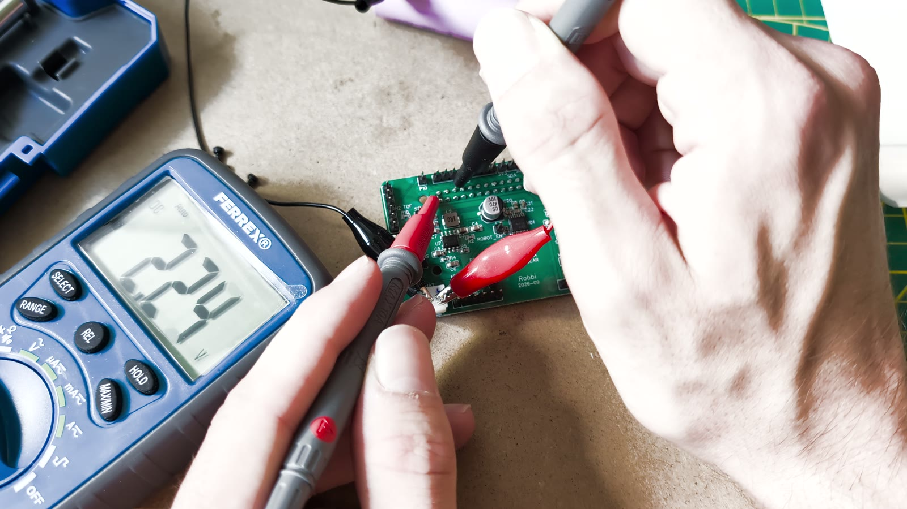
Important
The power test-point drawing identifies PACK−, PACK+ and 5V. Their names establish nominal functions; measured unloaded/loaded ranges still need to be recorded. The meter reading in this illustration is not a target value. The driver is battery-fed, so verify the duty/load limit for the selected 3 V motors before wheel tests.
2. Join the PCB directly to the Pi
- Keep both battery and Pi USB power disconnected.
- Align the PCB's underside female socket with all 40 pins on the Pi. Check both rows for a one-pin or one-row offset.
- Hold the boards parallel and press evenly at the connector. Support the boards instead of pressing on unsupported corners.
- Check the spacing and clearance from conductive fasteners.
- Reconnect the battery, press the power button and let the Pi start. With the black probe on PACK−, check 3V3 for the nominal 3.3 V logic rail. Shut the Pi down and remove power again before adding peripherals.
There are no jumper cables between these two boards: the socket mates directly with the Pi's header. You will make this same connection again after the Pi is screwed onto the back panel.
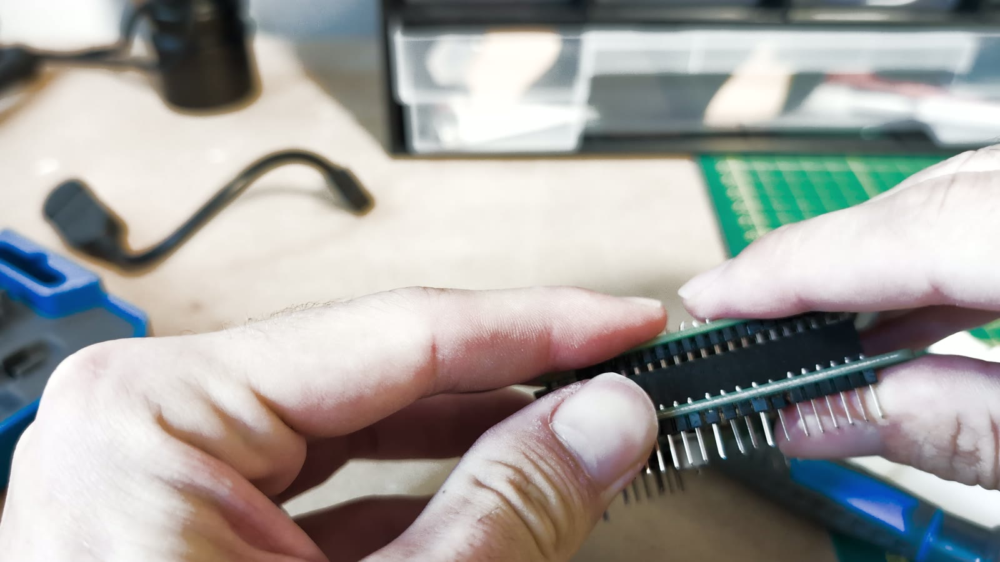
3. Connect the peripherals on the bench
Use the pin-by-pin tables to connect the LCD, microphone, camera, ToF sensor and speaker while power is off. The table below is a final connection checklist. Connect the camera ribbon squarely and close both latches. The USB microphone uses the Pi's USB data port through the OTG adapter, not PWR IN.
| Connection | Signals to identify before plugging in | Check |
|---|---|---|
| Pi ↔ custom board | All 40 header positions, including 5 V, 3.3 V and ground | Full alignment; no skipped row/pin |
| Display ↔ LCD header | VCC, GND, clock, data, reset, D/C, CS, backlight | Match signal labels, not wire colour; confirm VCC and backlight supply |
| Left motor/encoder ↔ left connector | Motor pair, encoder supply, encoder ground, A and B | Encoder power and motor power are distinct signals |
| Right motor/encoder ↔ right connector | Motor pair, encoder supply, encoder ground, A and B | Confirm the released right-B route; see repair note below |
| Forward ToF ↔ H1 | Supply, ground, SDA, SCL, XSHUT; any unused interrupt pin | Exact module voltage and pin order; H2 stays empty |
| Speaker ↔ SPEAKER | Amplifier's two speaker outputs | Neither lead should be assumed to be ground |
| Camera ↔ Pi CSI | Matching ribbon ends and contact orientation | Power off; latches fully closed |
| Microphone ↔ Pi USB | OTG data adapter and USB microphone | Use USB data port, not PWR IN |
| Cell holder ↔ BAT | Verified positive and negative | Female VH3.96 two-pin lead; polarity measured before insertion |
Reconnect the battery, press the power button, and let the installed service start with config/robot.yaml. Do not also feed the Pi through its USB power socket unless the released power circuit explicitly supports it. Leave motor output disabled and motor leads unplugged.
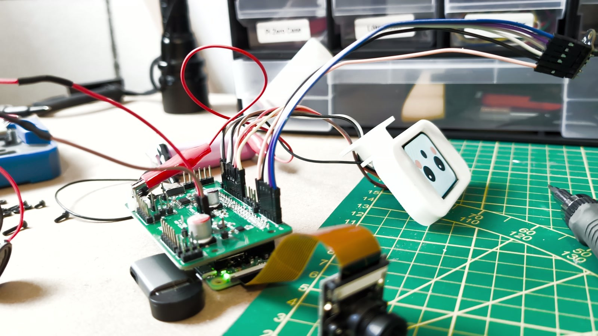
Use insulated, secure connections for your build. Temporary clip leads are not a finished battery harness.
4. Check each subsystem
Use dashboard Settings or ~/robbi-v2/config/robot.yaml for all edits below. After manual edits, run sudo systemctl restart robbi-v2.service. The installer already enables the display, camera, front ToF and IMU; verify those settings rather than selecting another profile. Keep hardware.enable_motors: false and runtime.calibration_confirmed: false.
Display
Set hardware.enable_lcd: true. Restart and select a face. The physical panel is 240 × 280; the runtime draws at 280 × 240 with offset_left=20, DC25, reset24 and SPI0/CE0. Those values are currently in src/robot/media.py.
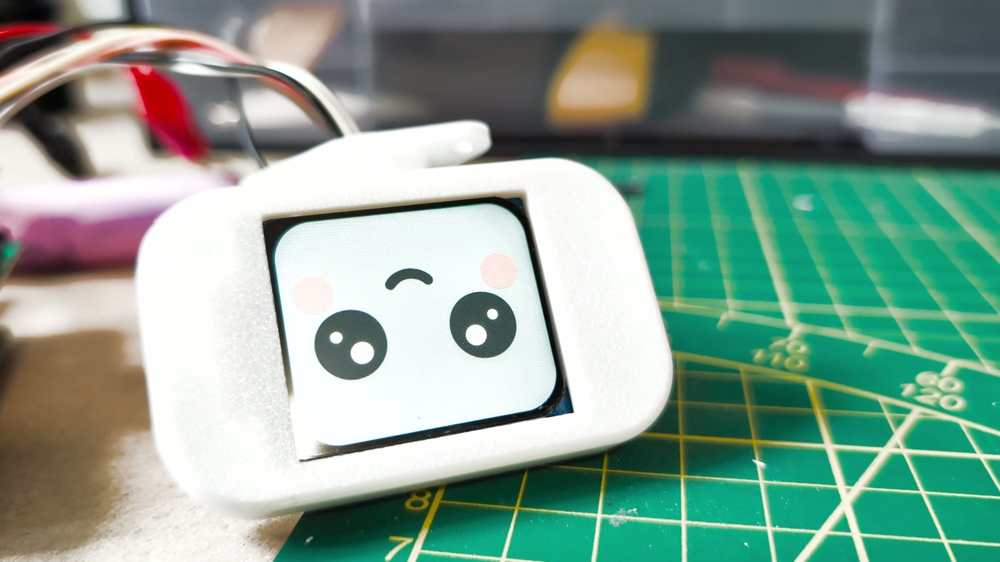
Check that a complete face is visible and stable. If the backlight is on but the image is missing, recheck the signal labels and selected interface before changing geometry.
Camera
Stop Robbi with sudo systemctl stop robbi-v2.service, then test camera detection and capture:
rpicam-hello --list-cameras
rpicam-still -n -t 2000 -o camera-check.jpg
Confirm an IMX219 is detected and inspect the actual image for focus, obstruction and orientation. If the third-party module is not auto-detected, check its manufacturer's overlay instructions rather than enabling the legacy camera stack. Bookworm uses rpicam-* applications; see the official camera software guide.
Then confirm camera.enabled: true, run sudo systemctl start robbi-v2.service and check that the dashboard image updates when you move an object. Stop the runtime before using rpicam-* again, because both would need the camera.
Microphone and speaker
First list ALSA devices:
arecord -l
aplay -l
Choose the actual card names shown on your Pi; do not rely on card numbers remaining constant. With the runtime stopped, record a short sample (substitute the USB mic's card name for Device if necessary):
arecord -D plughw:CARD=Device,DEV=0 -f S16_LE -r 16000 -c 1 -d 5 mic-check.wav
Play the file on your computer to check capture before testing the tiny speaker. Configure audio.mic_device and audio.alsa_device in config/robot.yaml to match the device list. For speaker testing, start with a quiet speech sample and low software volume; the specified speaker is only 0.5 W. Confirm the amplifier/card name rather than assuming it is always MAX98357A.
Distance and orientation readings
Set tof.enabled: true and imu.enabled: true, leaving tof.h2_enabled: false. Restart and watch live values in diagnostics.
- Move a flat object toward and away from the forward ToF. Values should change plausibly and have fresh timestamps. H1 boots at
0x29and is assigned0x30by the runtime each startup; the configuration's decimal48means0x30. - Gently rotate the robot while holding the body. Orientation should respond in the same sense and settle when held still. The recorded LSM6DS3TR-C device was at
0x6B; identification is more useful than assuming every board uses that address.
Check that both sensors respond here. Perform the full IMU calibration after physical assembly.
5. Shut down before assembly
Record a pass for display, camera, microphone, speaker, forward distance and live orientation. Resolve failures while the components are easy to reach. Shut Linux down, switch off and remove the battery before mounting the electronics.
Checkpoint: each peripheral works on the bench; the bare-board supplies have been checked; motor output is still disabled. Continue to Assembly.
GPIO reference
BCM assignments and the prototype encoder repair
These are BCM numbers. The physical header position is shown separately to avoid mixing the numbering systems. They come from the current runtime and its hardware acceptance notes, not a confirmed new PCB release.
| Function | BCM | Physical header pin |
|---|---|---|
| I²C SDA / SCL | 2 / 3 | 3 / 5 |
| Motor driver enable | 26 | 37 |
| Left motor inputs | 4 / 17 | 7 / 11 |
| Right motor inputs | 22 / 23 | 15 / 16 |
| Left encoder A / B | 27 / 5 | 13 / 29 |
| Right encoder A | 6 | 31 |
| Right encoder B, intended route | 16 | 36 |
| Right encoder B, original robot's repair only | 7 | 26 |
| Display SPI clock / data / CE0 | 11 / 10 / 8 | 23 / 19 / 24 |
| Display D/C / reset | 25 / 24 | 22 / 18 |
| Speaker I²S clock / LR clock / data out | 18 / 19 / 21 | 12 / 35 / 40 |
| Forward H1 ToF XSHUT | 13 | 33 |
| Optional H2 XSHUT, unused here | 12 | 32 |
Encoder selection: the installer writes hardware.right_encoder_b_pin: 16 for the standard board. Match this to the released PCB route before motor tests. Alternate wiring may select 7, which reserves Servo 1; never bridge GPIO7 and GPIO16. Do not rely on a missing-field default: private prototype and public runtime defaults differ. Set the field explicitly to match the physical connection. Use dashboard diagnostics for the selected pin rather than an old standalone probe with hard-coded assignments.
Battery and shutdown
Use the external charger selected in the parts guide for initial charging. Remove the cell from the robot after shutting Linux down and switching power off. Onboard USB charging should only be included in the public instructions after the actual circuit, cell, charge current and thermal/protection checks are confirmed.
The reference P30B is a 3.6 V nominal Li-ion cell with a 4.2 V charge voltage; its current and temperature limits are conditions to respect, not the robot's required operating current. See the manufacturer's cell datasheet. Do not solder to the cell, use a damaged wrapper, or leave its terminals loose among tools.
For normal shutdown, run sudo shutdown -h now, wait for shutdown to finish, then switch the robot off. A physical power cut is available for an immediate fault; it is not the routine Linux shutdown procedure.
Wiring reference · Robbi 2026-09
Guide home · Bench tests · Assembly
Use this page with the supplied gerber_v1.zip, bom_v1.csv and pickandplace_v1.csv. Connector positions come from that placement file; the connections below were checked through the four copper layers and plated holes in that Gerber package. They describe the PCB, not an assumed wire-colour scheme.
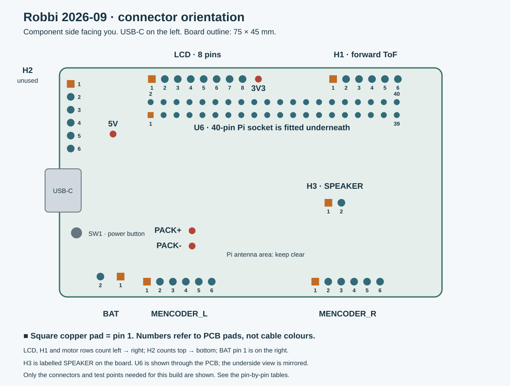
Orient the board
Place the board component side up, USB-C to the left, with the LCD and H1 headers along the top. In this view:
- LCD, H1 and both motor connectors: pin 1 is at the left end.
- H2: pin 1 is at the top end; leave H2 empty in this build.
- BAT: pin 1 is the right-hand pad, connected to battery positive. Pin 2 is negative.
- SPEAKER / H3: pin 1 is on the left.
H3is the manufacturing-file reference;SPEAKERis the board label. - U6: the female 40-pin socket fits on the underside. Do not mirror this top-view drawing when identifying the copper pads.
Pin 1 has a square copper pad. Verify the pad when a fitted connector hides the outline. All wiring and continuity checks below are done with the battery and USB disconnected.
Display · LCD
| PCB pin | Signal | Connect to |
|---|---|---|
| 1 | 3V3 | VCC |
| 2 | GND | GND |
| 3 | SPI clock | SCL |
| 4 | SPI MOSI | SDA |
| 5 | Reset | RES |
| 6 | Data/command | DC |
| 7 | Chip select | CS |
| 8 | 3V3 backlight | BLK |
The display's first two pins are GND, VCC; the PCB's first two pins are VCC, GND. Match the printed signal names. Do not connect the two eight-pin rows with an unverified straight-through harness. On this display, SDA and SCL are SPI data and clock, not the ToF sensor's I²C bus.
Forward distance sensor · H1
| PCB pin | Signal | Connect to |
|---|---|---|
| 1 | 3V3 | VCC |
| 2 | GND | GND |
| 3 | I2C SDA | SDA |
| 4 | I2C SCL | SCL |
| 5 | Unrouted | Leave unconnected |
| 6 | XSHUT / BCM13 | XSHUT |
Connect five signals: VCC, GND, SDA, SCL and XSHUT. H1 pin 5 has no routed connection; the ToF module's interrupt output is unused. Map by the sensor's printed labels, not by its physical left-to-right order. H1 pin 6 reaches Pi physical pin 33 / BCM13. The spare H2 connector uses physical pin 32 / BCM12 for XSHUT and stays empty.
Motors and encoders
Left/right always means Robbi's viewpoint looking forward. Each six-wire cable carries both motor power and encoder feedback. Encoder VCC is 3.3 V; the motor pair is a separate circuit.
Left · MENCODER_L
| PCB pin | Signal | Connect to |
|---|---|---|
| 1 | Motor terminal 1 | Motor lead 1 |
| 2 | 3V3 encoder supply | Encoder VCC |
| 3 | Encoder A / BCM27 | Encoder A |
| 4 | Encoder B / BCM5 | Encoder B |
| 5 | GND | Encoder GND |
| 6 | Motor terminal 2 | Motor lead 2 |
Right · MENCODER_R
| PCB pin | Signal | Connect to |
|---|---|---|
| 1 | Motor terminal 1 | Motor lead 1 |
| 2 | 3V3 encoder supply | Encoder VCC |
| 3 | Encoder A / BCM6 | Encoder A |
| 4 | Encoder B / BCM16 | Encoder B |
| 5 | GND | Encoder GND |
| 6 | Motor terminal 2 | Motor lead 2 |
Use the supplied motor cable at the encoder board and terminate its other end to match this table. The exact motor-cable colour assignment has not been established from the available references. Identify the motor maker's pin labels before powering it; do not guess encoder power from the wire colours.
For this PCB, set hardware.right_encoder_b_pin: 16. GPIO7 was a repair on the original robot's faulty Pi; it is not the normal route on a new board. Do not join GPIO7 and GPIO16.
Speaker · SPEAKER / H3
| PCB pin | Signal | Connect to |
|---|---|---|
| 1 | Speaker + | Speaker + |
| 2 | Speaker - | Speaker - |
Use the specified 20 mm, 8 Ω, 0.5 W speaker. Both leads go to the amplifier outputs; neither goes to ground.
Battery · BAT
| PCB pin | Signal | Connect to |
|---|---|---|
| 1 | Battery + / PACK+ | Holder positive |
| 2 | Battery - / PACK- | Holder negative |
Use the VH3.96, two-pin cable with female socket contacts. With the cell removed, trace the holder's positive contact to BAT pin 1 and its negative contact to pin 2. Confirm the cable polarity even if it arrives prewired.
The motor driver's supply is connected to PACK+, the battery rail, rather than to the regulated Pi 5 V rail. The selected motors are rated 3 V. Keep initial movement bounded and use a verified duty limit; the loaded motor/thermal limits remain a physical measurement to document.
Pi, camera and microphone
- The Pi joins the underside U6 socket directly through its complete 2 × 20 header. There are no jumper wires between the Pi and custom PCB.
- Use the 16 cm, 22-pin-to-15-pin camera ribbon. The narrow 22-pin end fits the Pi Zero; the wide end fits the camera. Seat contacts against the socket contacts, close both latches and leave a gentle bend.
- Plug the left-angle Micro-USB OTG adapter into the Pi's USB data port and plug the mini USB microphone into it.
PWR INcannot carry microphone data.
Power test points
Keep the black multimeter probe on PACK−. Use the marked single test pins instead of trying to touch adjacent IC legs.
| Red probe | When to check | Expected function |
|---|---|---|
| PACK+ | Battery connected | Battery voltage; also feeds motor-driver VM |
| 5V | Battery connected and power button pressed | Nominal 5 V output for the Pi |
| 3V3 | After the Pi is attached and powered | Nominal 3.3 V from the Pi |
A bare PCB does not generate its own 3.3 V rail. Do not treat a missing 3.3 V reading during the battery-only test as a fault. Nominal rail names are not measured acceptance tolerances; record the actual unloaded and loaded readings.
Two placement-file test-point names are misleading: TP_USB_DETECT actually connects to right motor output 2 (the board labels it MR2), and TP_I1C_SCL connects to Pi physical pin 27 rather than the main I²C clock. Use the named power pins above and the connector tables instead.
5. Assemble Robbi
Guide home · ← Bench tests · Calibration →
Watch the assembly video alongside these steps.
Start here once the bench tests pass. Keep the battery out while fitting parts, changing plugs and soldering. Keep the wiring reference open alongside this page. The parts list establishes M2 socket-head screws, M3 × 14 mm screws, M2 inserts and MR128ZZ bearings; the remaining per-location fastener lengths/counts are tracked in the release checklist.
Build order: motors → Pi on back panel → wired PCB → head → back-panel fit → ToF → side-panel inserts → final soldering.
1. Mount the motors first
You need: main body, two matching encoder motors, their leads, wheels and the release-specified retainers/bearings.
- Define left and right from Robbi's viewpoint looking forward. Label the leads
LandR. - Attach the matching motor/encoder plugs while the sockets are accessible. Feed the leads into the body.
- Seat each gearbox in its printed motor mount, with the output shaft aligned to the wheel opening. The existing assembly view below shows the bearing seated in the body next to the gearbox; keep the encoder board toward the accessible interior.
- Fit the specified retainers without forcing a misaligned motor into place. Keep the rear encoder board and rotating magnet clear of wires.
- Seat the MR128ZZ bearing in the circular recess at each motor-shaft opening. The shaft projects through the centre; keep the bearing square in its seat.
- Look for the flat on the D-shaped motor shaft and the matching flat inside the printed wheel hub. Align the two flats, then press the wheel on straight. Do not hammer the wheel onto the gearbox shaft or force a misaligned hub.
- Check that the hub sits correctly at the bearing and the wheel turns without rubbing the body. Leave motor leads unplugged from the PCB until the commissioning checks call for them.
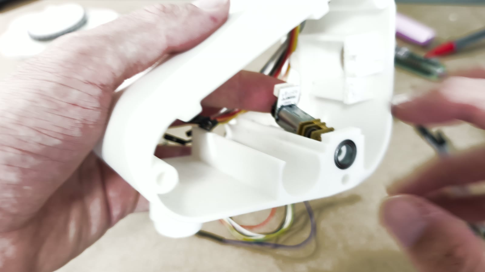
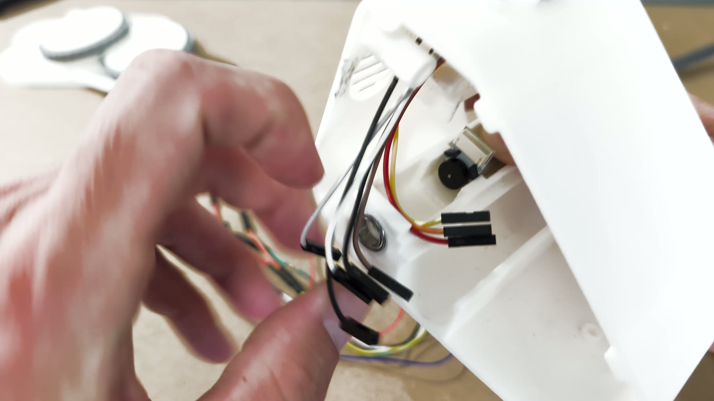
| Bearing seat and motor shaft | Matching wheel hub |
|---|---|
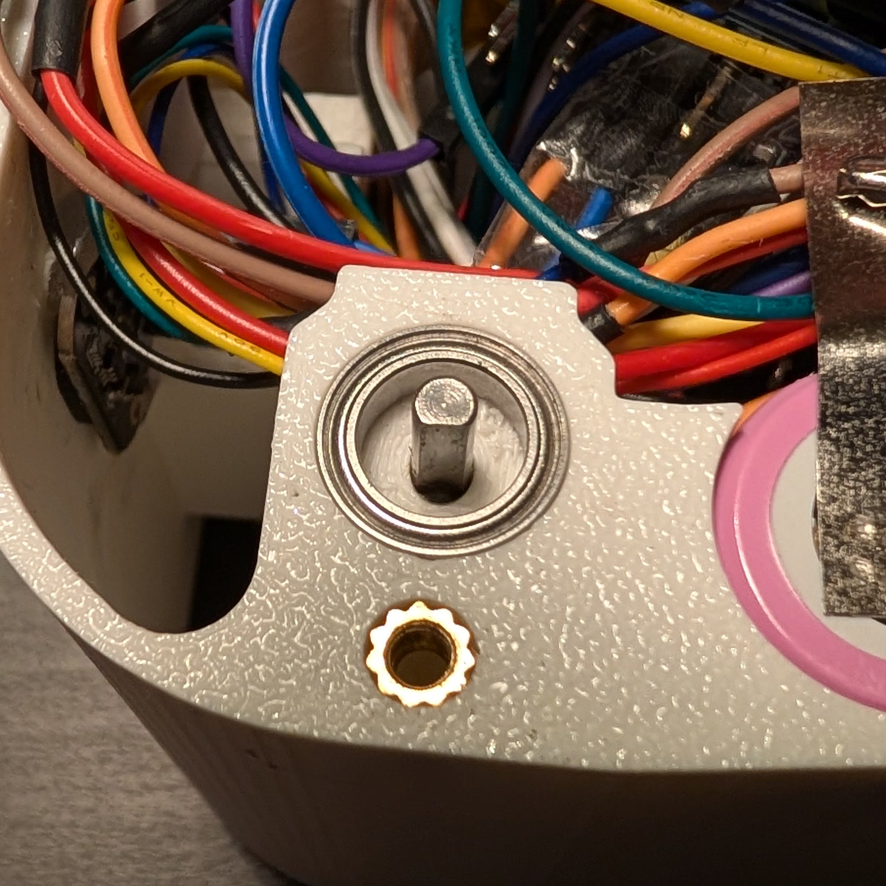 |
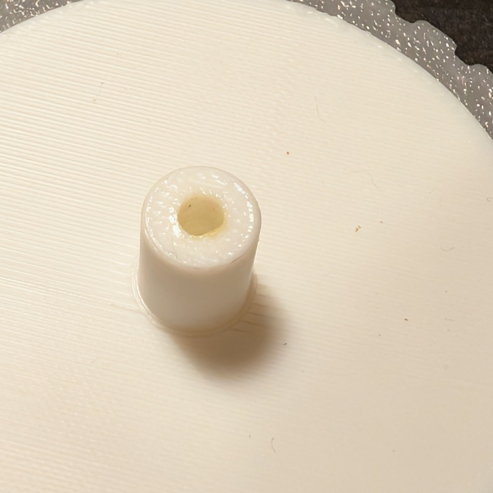 |
| The bearing belongs in the body's circular recess. Identify the flat on the shaft before fitting the wheel. | The hub has one subtly straight edge; match it to the shaft flat. |
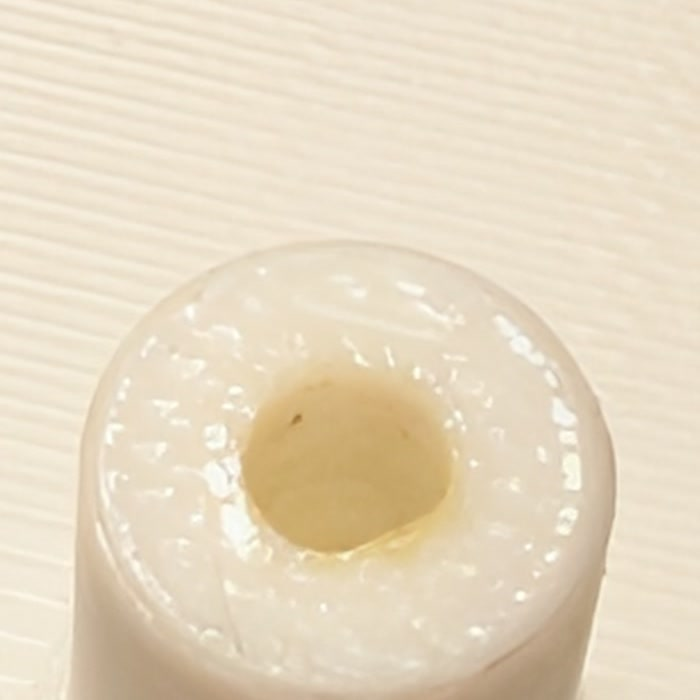
Hub detail: the lower-right edge of the opening is flat; the remaining profile is rounded.
Checkpoint: both motors and wheels are fitted before the Pi/back-panel assembly begins. Both wheels clear the body, and no wire can reach a rotating shaft or encoder magnet.
2. Screw the Pi onto the back panel
Keep the back panel separate from the body while working on it. Position the Pi on its mounting points and check access to the microSD card, ports and camera connector. Tighten the specified screws gently; the board must stay flat and clear of metal screw ends.
Tip
The updated design is easier to assemble: the screws enter from behind, through the outside of the back panel. The earlier mounting arrangement shown below has different screw access.
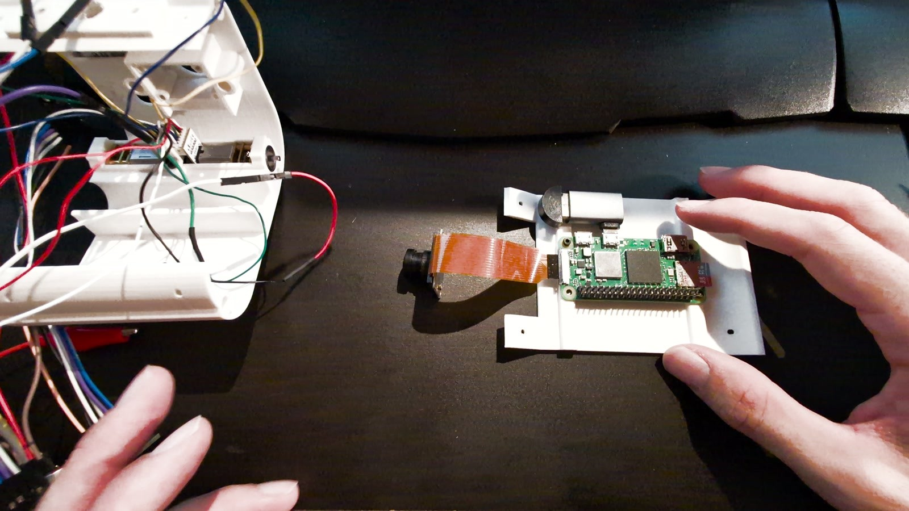
Fit the left-angle Micro-USB OTG adapter to the Pi's USB data port, then plug the USB microphone into the adapter's USB-A socket. Check that the assembly fits inside the body and does not strain the Pi connector. The Pi's separate PWR IN socket cannot carry microphone data.
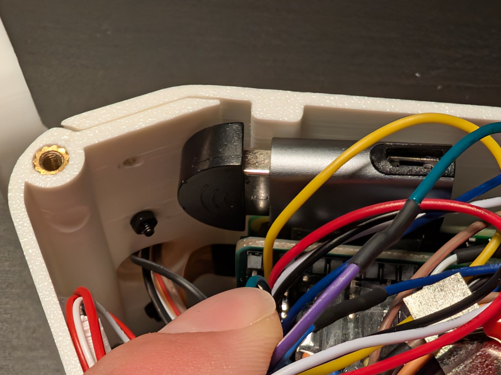
Connect the camera ribbon with power off, keep its latches closed, and leave broad bends rather than a crease. The detailed camera mounting and cable route are shown in step 5 below.
3. Plug the wired PCB onto the Pi
Keep the peripheral wiring connected to the PCB where practical. Bring the board to the mounted Pi, align all 40 header positions, support both boards and press the socket on evenly. This is the same direct connection used for the bench test.
Check the connector from both sides. Keep the attached wire bundle and camera ribbon free; do not pull the boards together using their cables.
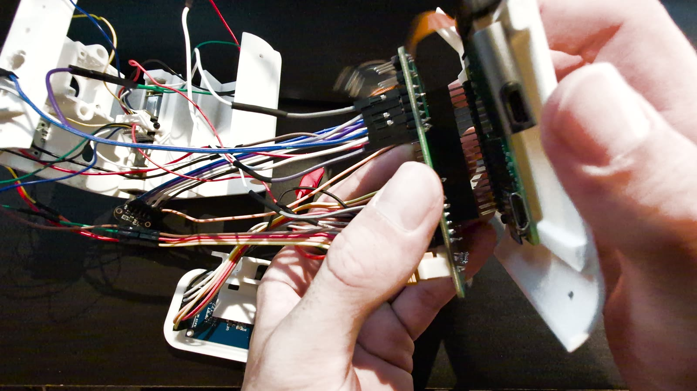
Checkpoint: the Pi is secured to the back panel, the PCB is fully seated, and the back panel is still outside the body.
4. Assemble and attach the head
You need: head shell/bezel, display, display harness, head bracket/joint and specified fasteners.
- Seat the display in the bezel, centred on its supports. Fit the printed retaining bracket over the back of the display and secure it using the central screw shown in the photograph below. Avoid pressure on the glass, flex cable and small components.
- Connect the eight display wires using the LCD table: PCB pins 1–8 are VCC, GND, SCL, SDA, RES, DC, CS, BLK. The display reverses the first two power pins relative to the PCB. Route the harness through its passage before fastening the head and bracket.
- Attach the head base to the body. The base fixing screws pass through the mounting surface and are secured by two nuts inside the body. Route the harness through the opening before tightening, and keep it clear of the screw heads and nuts.
- Leave a relaxed loop for the allowed head adjustment. Move the head gently by hand and check that nothing pulls tight.
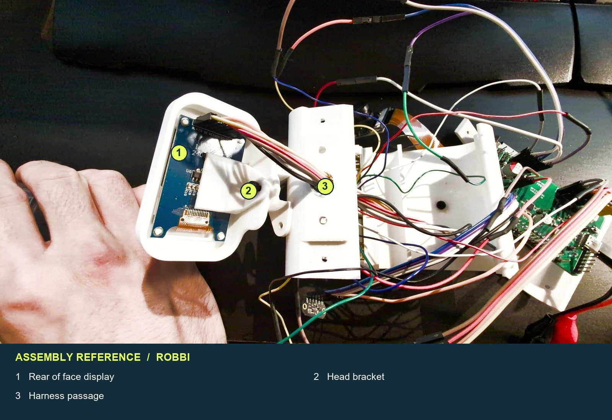
1 — display rear; 2 — head bracket; 3 — harness passage.
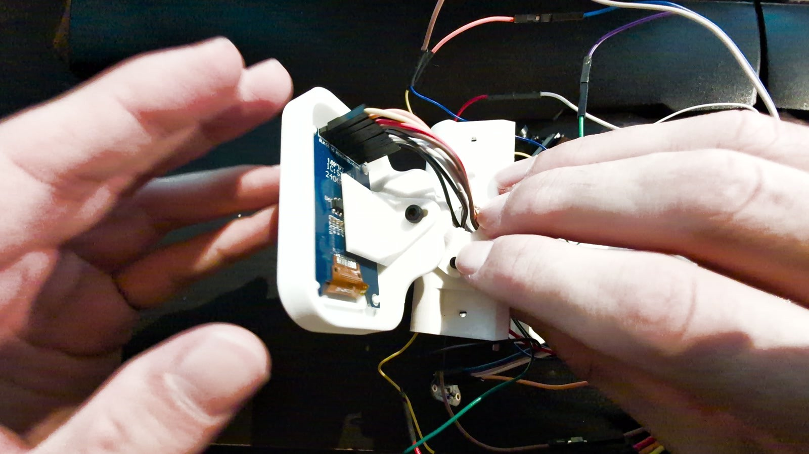
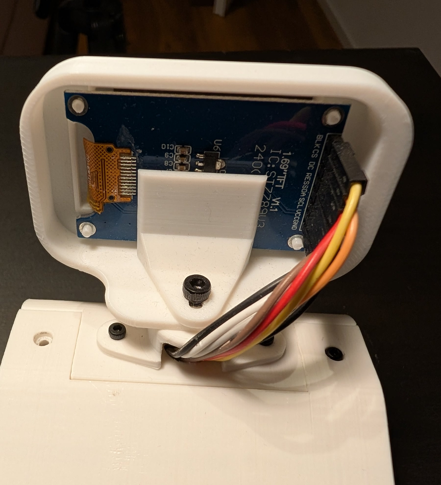
Rear view: the central screw secures the printed display-retaining bracket. The harness exits through the opening at the head base. Leave enough slack for head adjustment.
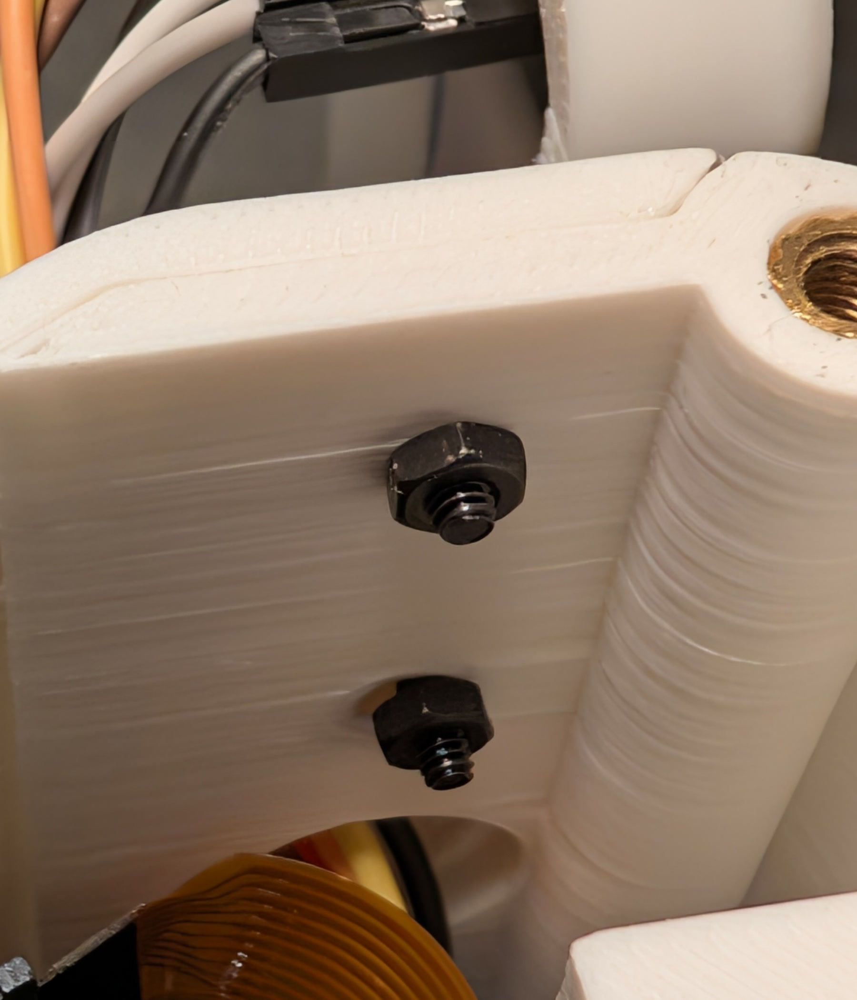
Inside view: support the outside screw heads while gently tightening these two nuts. Keep the display harness and orange camera ribbon out of the fasteners.
Do this after mounting the Pi on the back panel and before sliding that panel into the body.
5. Pack the wires and fit the back panel
Before packing the wires, check these three placements while access is still open:
- Camera: fastened to its printed supports with the mounting screws shown below, lens aligned with the body aperture, and 16 cm adapter ribbon latched at both ends.
- Speaker: 20 mm driver behind its grille, with its two leads running to SPEAKER/H3.
- Battery holder: empty holder in its body position, positive lead traced to BAT pin 1 and negative to pin 2.
Keep the speaker diaphragm and camera lens clear of glue and mounting pressure. Route the battery lead clear of the wheel area.
Camera mounting and ribbon route
Fasten the camera module to the printed mount using the mounting screws shown. Tighten gently and keep the board flat. Check from outside that the lens is centred on its opening.
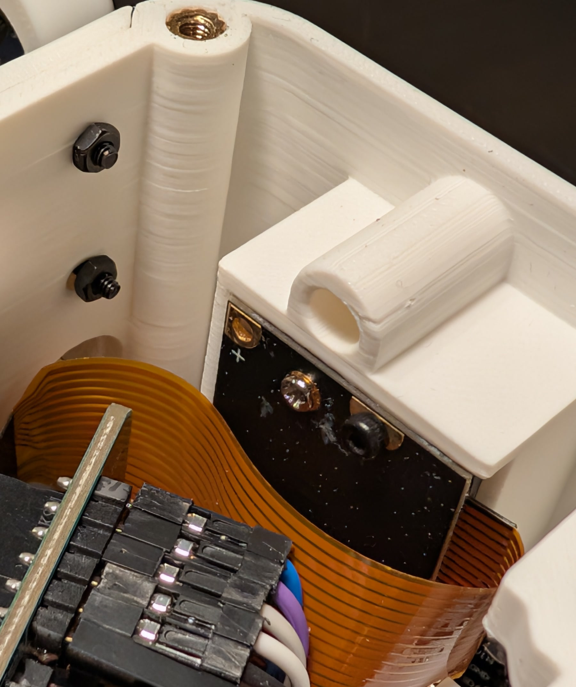
Route the orange camera ribbon in a relaxed, inverted S-shaped path through the available space. Leave slack at both connectors and keep it away from the head-mount nuts, the wheel area and the back-panel edge. Use broad bends; the tight folds visible on the prototype are not a reason to crease the ribbon on a new build.
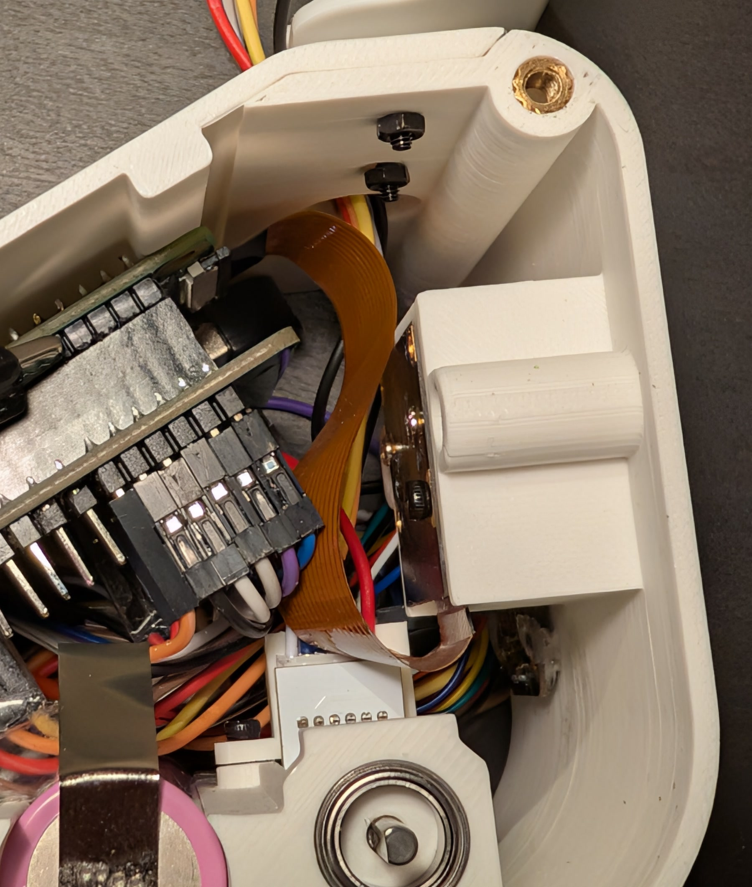
Slide in the back panel
- Guide the wire bundle into the main body gradually. Keep plugs seated and move loose loops away from panel edges and wheels.
- Watch the camera ribbon continuously: there is very little room around it. Do not pinch, sharply crease or pull it at either connector.
- Gently flex the main body to widen the rear opening by a few centimetres so the back panel can slide in more easily. Stop if the plastic resists or a cable becomes taut.
- Guide the panel into its seat while tucking wires inside. If it catches, ease it back and reposition the obstruction; do not pull it closed with screws.
- Check the camera ribbon again before fastening the panel.
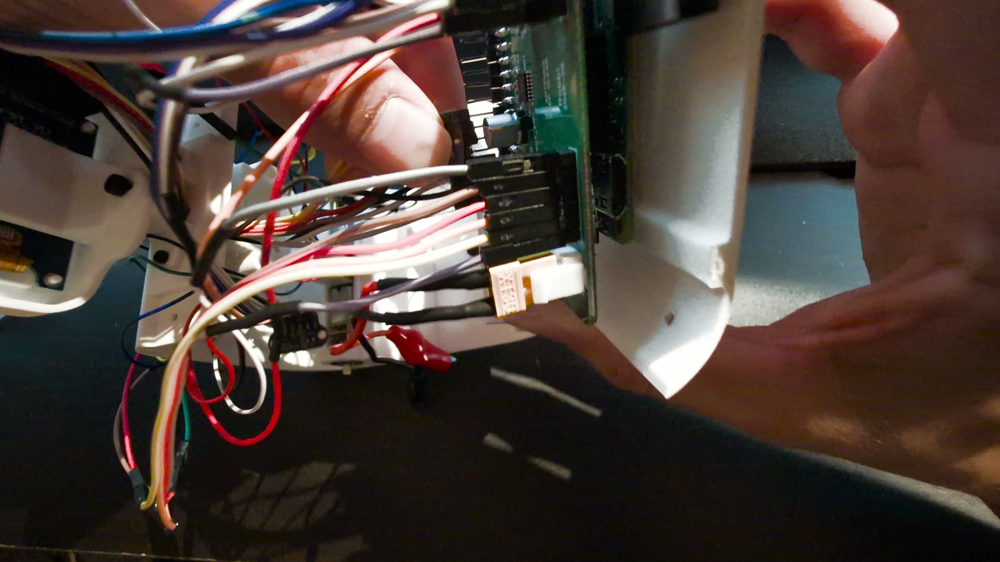
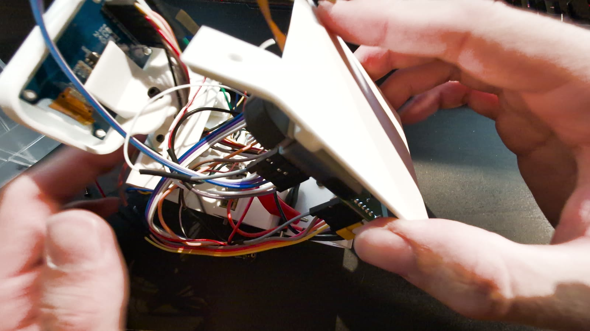
Checkpoint: the panel fits without trapping the camera ribbon, and the remaining sensor/wiring work is still accessible.
6. Hot-glue the forward ToF sensor
- Position the ToF sensor at the forward-facing opening. Remove any shipping film and keep both optical windows exposed.
- Apply small amounts of hot glue at the retaining surfaces, away from the optics and connector contacts.
- Hold the sensor aligned while the glue sets. Do not let its wires pull it out of position.
- Inspect from inside and outside: the sensor faces out through the opening and the optical path is clear.
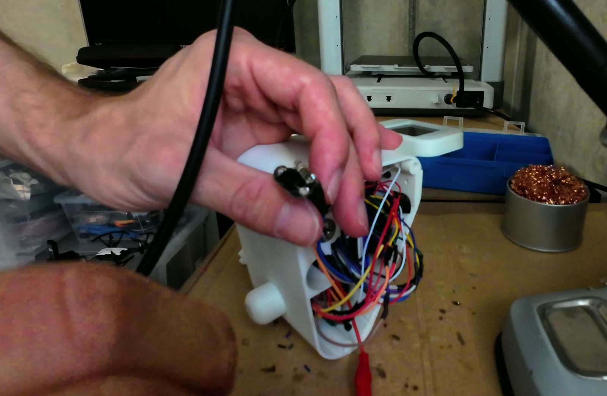
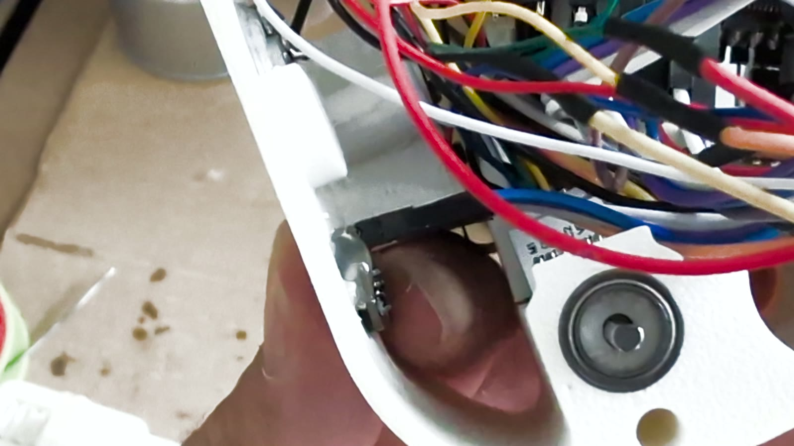
7. Fit the side-panel inserts
These heat-set inserts provide the threads for the screws that attach the side panels to the main body.
- Match each insert's outside diameter and length to its printed pocket. Keep the battery removed and nearby wires clear of the hot tool.
- Use the soldering iron with an appropriate tip to heat and guide the insert straight into its pocket.
- Keep the insert square and let the heat do the work. Avoid sideways pressure and pushing it past the intended depth.
- Allow the plastic and insert to cool before trying the side-panel screw. Fit the side panels after the remaining wiring is checked.
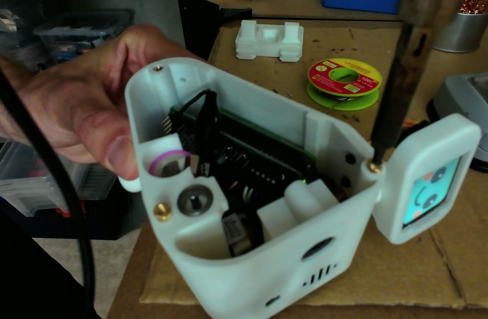
8. Finish the wiring and close up
The robot is now largely assembled. Finish the remaining wire joints with the battery removed.
- Check each lead against the wiring tables. For the motor cables, identify the motor pair and the four encoder signals separately. For the battery lead, verify BAT pin 1 is positive; for the speaker, use both H3 outputs. Only splice leads that need termination or length adjustment—do not add solder joints to a complete working harness. Leave service slack without loops near the wheels.
- Slide heat-shrink on before soldering. Strip and tin the ends, heat the joint, let the solder flow and hold it still while it cools.
- Inspect for loose strands and bridges. Insulate each joint individually and check the lead with a gentle tug at its insulation.
- Tuck the finished wires into the body. Recheck the camera ribbon, head loop, panel seams and encoder clearance.
- Fit the side panels using the correct screws. Stop if a panel needs screw force to close.
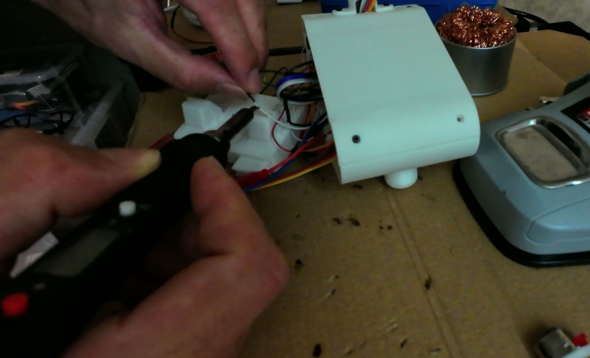
Rear support foot
Keep the rounded rear support foot fitted to the underside of the body. Together with the two driven wheels, it provides the third floor contact and keeps the rear shell clear of the floor. This is a support foot/skid, not a third powered wheel.
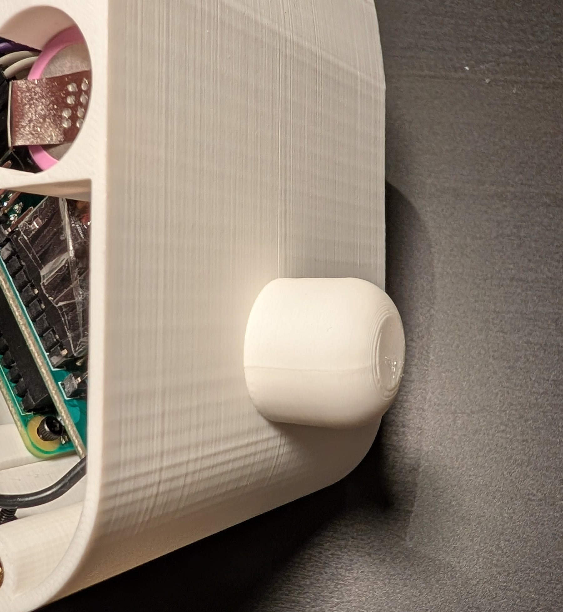
Set Robbi on a flat surface and check that the wheels and rear foot support him, the shell clears the floor and no cable hangs underneath. Check this before powered floor tests.
Checkpoint: continuity matches the wiring table, adjacent joints are individually insulated, the body closes freely, the rear support foot is fitted and the sensor windows remain clear. Recheck the camera image after closing: a cable that worked on the bench can be disturbed when fitting the panel. Continue with IMU calibration and final checks.
6. Calibrate and test Robbi

Guide home · ← Assembly · Troubleshooting →
Do this with the confirmed PCB wiring, motor supply checks and software pin mapping complete. The original robot's measurements are starting estimates, not calibration values for every printed robot.
1. Calibrate the IMU
Complete the final wiring and fitting checks before powering up. Open the dashboard's IMU tab and follow its calibration procedure in the order shown. Keep motor output disabled during this step.
When calibration is complete, gently rotate the robot by hand and check that the orientation responds correctly and settles when held still. Record the result before moving on to wheel tests.
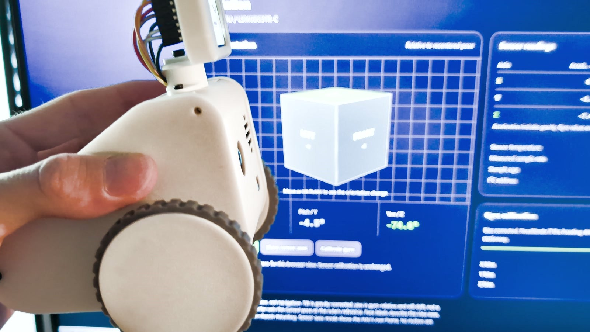
The illustration shows an older dashboard design. Use the IMU tab and its calibration instructions in your installed version.
2. Inspect before enabling movement
- Shut down and remove power. Reconnect the labelled motor/encoder leads, inspect polarity and look for anything near the wheel or encoder magnet.
- Set
hardware.right_encoder_b_pin: 16for the supplied PCB. The wiring table traces right encoder B to Pi physical pin 36 / BCM16. Use7only for an explicitly rewired repair; configure the field rather than editing the Python source. - Confirm the rear support foot is fitted, then support the body so both wheels are off the surface. Keep fingers and loose cables clear. Make the physical power cutoff immediately reachable.
- Leave autonomy, heartbeat, daily tasks and servo outputs disabled. Keep the obstacle guard enabled for forward motion; place a clear target within the sensor's usable range if needed to obtain a valid sample.
- With motor power disabled, observe the encoder counts while slowly rotating each wheel. Both A and B should change, and turning one wheel should affect only its own channel. Do not force a gearbox that resists back-driving; use the controlled raised-wheel test after wiring checks instead.
Legacy tools: tools/hardware/encoder_probe.py has an independent hard-coded repair map. Its --pulse option also commands 60% duty. Do not run it unchanged as a generic new-build test. Use a release-matched diagnostic or the runtime's motion diagnostics. Stop the runtime before any independent tool claims GPIO.
3. First powered wheel tests
The runtime requires both runtime.calibration_confirmed: true and hardware.enable_motors: true before it permits motor output. The first flag is a manual acknowledgement, not evidence that software has measured calibration automatically. Enable the two flags only after the preceding wiring, pin ownership, supply and raised-wheel checks; finish the measurements below before floor operation.
Keep the supplied conservative PWM caps initially. A duty cap alone does not make an incompatible supply safe. If the motor does not start, stop and investigate friction, voltage and the appropriate duty range rather than leaving it stalled.
- Apply one short, bounded left-wheel command, around 200–300 ms, at a verified low duty. Stop completely.
- Confirm physical forward direction and positive logical forward counts. Repeat for the right wheel.
- If the motor direction is wrong, check its wiring and the runtime's
motion.left_motor_invert/motion.right_motor_invertsettings. If encoder counts have the wrong sign, use the correspondingmotion.encoder_left_invert/motion.encoder_right_invertsetting after checking A/B wiring. - If the left command moves the right wheel, fix the side assignment. Do not hide an accidental harness swap behind several simultaneous inversion changes.
- Repeat both directions and use Stop during a short command. A wheel that continues running, has no encoder feedback or starts unexpectedly is a failed test.
Record which setting you changed and repeat the same test. Change one variable at a time.
4. Measure wheel travel
Measure the outside diameter of the finished rolling surface, including its tread, and the distance between wheel contact centre lines. Enter dimensions in centimetres for motion.wheel_diameter_cm and motion.wheel_base_cm.
Measure counts over several exact wheel revolutions, then divide by the number of revolutions. motion.encoder_counts_per_rev must mean decoded counts per output-wheel revolution, including the gearbox and the software's quadrature counting convention. The seller's motor-shaft pulse count is not necessarily that number.
The prototype profile uses 6.2 cm diameter and 2800 counts/revolution. Its effective turn spacing has been adjusted between recorded builds. Re-measure instead of inheriting those values silently.
5. Straight-line checks on the floor
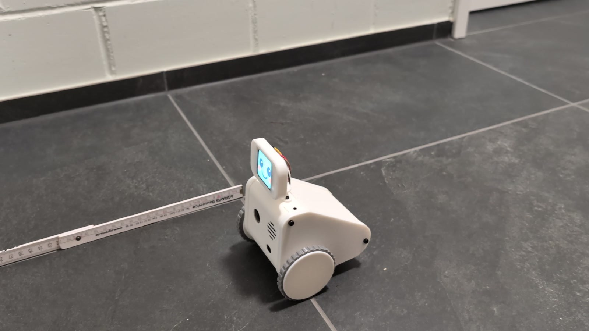
- Use a clear, level floor away from stairs. Check that the two wheels and rounded rear support foot support the body with the shell clear of the floor. Mark the start position of a fixed reference point on the robot, such as the axle centre line.
- Start with a 10 cm forward move at low speed. Check direction, stop behaviour and approximate distance.
- Increase to 50 cm, then 100 cm after the shorter move is reliable. Measure from the same reference point after the robot has stopped.
- Repeat at least three times and record forward distance and sideways drift. Test reverse travel separately with the space behind Robbi clear.
If every run travels approximately the same proportion too far or too short, check wheel diameter and counts-per-revolution. If changing only effective wheel diameter for a systematic distance error:
new diameter = old diameter × commanded distance / measured distance
For example, a commanded 100 cm that repeatedly travels 90 cm suggests multiplying the current diameter by 100/90, provided slip, counting errors and units have already been excluded. Do not adjust diameter and counts-per-revolution at the same time. A path that curves points first to wheel drag, mismatched tread, missed counts or side mapping, not just a global distance scale.
6. Turning checks
Mark the starting heading on the floor and test left/right 90° turns, then 180° and a full revolution. Let each turn settle before measuring. Repeat in both directions.
Confirm the straight-distance calibration first. Adjust effective wheelbase only when the observed error is repeatable and wheel slip/encoder problems have been excluded. If the active controller uses IMU feedback or a separate turn gain, inspect that control mode before applying an odometry-only correction; do not tune several mechanisms to compensate for one another.
Checkpoint: turns are repeatable in both directions, neither wheel loses counts, and Stop works throughout. Record the measured error; “looks roughly right” is not a calibration result.
7. Sensors and interruption tests
With a soft obstacle and room to stop, verify the forward range guard at low speed. A configured 12 cm threshold is a starting setting, not proof that stopping distance is adequate at every speed.
Verify that stale or missing forward range blocks forward motion. Disconnect sensors only with power off; restart and inspect the expected fault before attempting a supervised check. The absence of a second ToF means there is no validated cliff detection. Keep all floor tests away from edges.
During a short finite movement, interrupt the network and verify that the command expires and does not resume when the connection returns. Test the physical cutoff separately. Confirm the robot recovers to a stopped state after restart.
8. Recheck the finished assembly
- Shut Linux down, switch off and remove the cell.
- Dress the wires into the body. Preserve the head's service loop; keep the camera ribbon away from screw tips and sharp folds.
- Check each panel is seated without force. If a gap remains, reopen it and find the obstruction instead of tightening harder. Protect the camera ribbon when refitting the back panel.
- Turn each wheel and move the head by hand again. Check the power switch, charging/battery access and microSD access.
- Reinstall the battery, power on, and repeat the face, camera, microphone, speaker, sensor and short motion checks. A fault that appears only after closing is often a pinched lead or shifted connector.
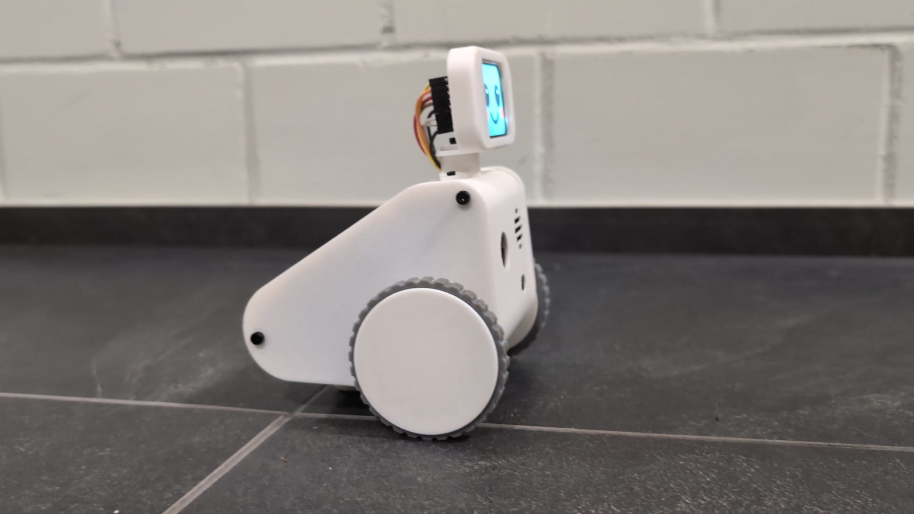
Complete the build record, save your final configuration and package versions, and keep a backup of the working SD card. Enable autonomous features individually only after manual movement and sensing are reliable. Room-scale navigation and a kitchen-and-back demonstration require their own testing; assembling the hardware does not establish that level of accuracy.
9. Test STT, LLM and TTS
Hardware checks do not yet prove the complete conversation works. Configure your own providers, then check each part separately.
| Check | Try this | Pass condition |
|---|---|---|
| STT — speech to text | Say a short sentence into the microphone. | The transcription matches what you said. |
| LLM — language model | Send a simple question through typed chat. | Robbi produces a relevant, coherent answer. |
| TTS — text to speech | Play a short response through the speaker. | The voice is understandable and free of obvious clipping or distortion. |
| Full conversation | Ask aloud, wait for the reply and follow up. | Listening, transcription, response and speech work together. |
Run robbi-setup if you skipped provider setup or want to change keys. The wizard stores your own keys in the runtime’s .env.secrets with owner-only permissions and leaves calibrated geometry intact. Dashboard Settings → Connections & API keys also saves provider keys, accepts custom model IDs and local/OpenAI-compatible endpoints, discovers models and tests the connection. Select Tavily there to enable current web/news lookup. Choose a model and, for ElevenLabs, a voice available to your own account. No helper server is installed on the Pi.
After the individual checks above pass, set voice.enabled: true with wake_engine: local_wake, and enrol your own examples in the Wake word tab: at least four positives, three negatives and two noise clips, then run browser calibration and review the result before applying it. Record a few natural examples at the intended speaking distance. Check recognition and false triggers before leaving listening enabled. Keep autonomy, Telegram and proactive tasks off until basic interaction works.
10. Verify automatic startup
The installer already creates and enables robbi-v2.service for your Linux account, using the same config/robot.yaml you calibrated. No service template or profile switch is needed.
sudo systemctl restart robbi-v2.service
systemctl status robbi-v2.service --no-pager
journalctl -u robbi-v2.service -n 80 --no-pager
Test a reboot and confirm the dashboard, settings and peripherals recover. Do not leave a foreground instance running alongside the service. The motor-disable helper assumes enable on BCM26 and supplements a reachable physical cutoff.
To stop automatic startup: sudo systemctl disable --now robbi-v2.service. To restore it: sudo systemctl enable --now robbi-v2.service. Back up your working configuration, private secret file and var/ to a private location after calibration.
7. Troubleshooting

Power off and remove the cell before moving plugs, swapping wires or touching the CSI ribbon. Inspect logs and live values before changing several settings at once.
| Symptom | Check first | Next step |
|---|---|---|
| Pi does not boot | Press the PCB power button; then check battery polarity, loaded supply voltage, microSD image and full header alignment | Isolate the Pi from the custom board and test it with its proper USB supply |
| Pi resets when motors start | Power rail droop, cell/holder contacts, motor startup load, protection trips | Stop motor tests and measure the loaded rails; do not disable protection |
| Board gets hot or a supply is shorted | Power immediately off; solder bridges, offset header, reversed lead | Correct the hardware fault before another power attempt |
| Dashboard unavailable | Runtime/service status, Wi-Fi and the Pi’s current address | Check journalctl -u robbi-v2.service -n 80 --no-pager; confirm selected config and port |
| Installer says no runtime release | Only the bootstrap script has been published so far | Wait for the runtime release; it makes no system changes while unavailable |
| Installer interrupted | Rerun the same installer/release | Completed steps resume; do not run this fresh installer over an unrelated existing robot |
| Setup rejects OS | Check /etc/os-release and python3 --version |
Use Bookworm Lite 64-bit; Trixie/Python 3.13 is not supported yet |
| New Wi-Fi does not connect | Correct 2.4 GHz SSID/password and a deliberate reboot | The wizard tests the current connection only; restore the original Imager network if needed |
| LLM test fails | Run robbi-setup and check key/model/account access |
HTTP 401 means credentials, 404 model/endpoint, 429 quota/rate limit; the dashboard still works offline |
| Import or dependency error | Python version and the active .venv |
Use the Bookworm/Python 3.11 environment and pip check; preserve the apt camera/numerical stack |
| Display lights but no face | LCD signal order, SPI device, D/C and reset | Check runtime logs and the ST7789 driver; do not assume backlight means SPI is wired correctly |
| Face is clipped or shifted | Exact panel variant and runtime dimensions | Verify 240 × 280 hardware, runtime 280 × 240 and offset_left 20 |
| Camera not detected | Power-off ribbon seating, contact direction and adapter type | Test rpicam-hello --list-cameras with Robbi stopped; follow the camera manufacturer's overlay instructions |
| Camera is detected but image is dark/blocked | Lens cap/film, enclosure opening and exposure | Inspect a saved still with the head open |
| USB microphone missing | USB data port and OTG adapter | Check arecord -l; a charge-only adapter or PWR IN port will not work |
| Speech is silent | ALSA card name, speaker connector, overlay and volume | Check aplay -l; confirm the amplifier overlay does not claim motor GPIO4 |
| Speech distorts or rattles | Excess volume, wrong speaker impedance, grille pressure | Lower software volume and inspect the 8 Ω / 0.5 W speaker mount |
| Typed chat works but voice does not | Capture sample, STT provider and wake references | Test recorded audio first, then speech recognition, then wake detection |
| ToF absent or stale | H1 wiring, XSHUT13 and runtime status | H1 boots at 0x29 and is reassigned to 0x30; keep unused H2 disabled |
| IMU view does not move | Correct chip, I²C identity and fresh samples | Check live values and follow calibration in the dashboard’s IMU tab; verify the module identity before changing hardware |
| Motor output refused | Both runtime motor gates and a fresh forward-range sample | Finish the wiring/bench checks before enabling output; do not bypass the guard for floor tests |
| One wheel turns, the other does not | Six-wire motor harness and correct side assignment | Check motor output separately from encoder A/B feedback |
| Encoder count stays zero | Supply, ground, both A/B pins and software pin map | Reconcile GPIO16 versus the original robot's GPIO7 repair; do not bridge pins |
| Robot spins instead of driving straight | Left/right mapping, direction and encoder signs | Raised-wheel test one side at a time; change one setting at a time |
| Consistent distance error | Wheel circumference and decoded counts per wheel revolution | Re-measure and calibrate one distance scale parameter |
| Irregular drift or different turns each time | Wheel rubbing, traction, loose hubs, missed counts and voltage | Fix the mechanical/electrical cause before retuning the controller |
| Works open, fails closed | Pinched ribbon, strained plug, screw contact or wheel obstruction | Reopen, inspect and reroute; do not force the panel shut |
When reporting a fault, include the board/print/software versions, the exact symptom, relevant log lines and a clear connector photo. Remove API keys, Wi-Fi credentials and personal recordings before sharing diagnostics.
PCB fabrication files
Use these three matching manufacturing files together. Their SHA-256 checksums are recorded in the release manifest.
| File | Purpose |
|---|---|
| gerber_v1.zip | Board artwork, outline and plated/non-plated drill files |
| bom_v1.csv | Assembly bill of materials, including supplier part numbers |
| pickandplace_v1.csv | Component positions, side and rotation |
The Gerber ZIP contains four copper layers: top, bottom and two inner layers. Use all four layers. The BOM contains 31 grouped rows covering 59 component references; the placement file contains the same 59 references, with no unmatched references in either direction.
Settings from the manufactured board
These settings were recovered from the manufacturer’s returned production package. The original Gerbers inside that package match the guide’s ZIP byte for byte.
| Setting | Value |
|---|---|
| Board outline | 75 × 45 mm |
| Material / thickness | FR-4 / 1.6 mm |
| Copper layers | 4 |
| Outer / inner copper | 1 oz / 0.5 oz |
| Solder mask / silkscreen | Green / white |
| Surface finish | Lead-free HASL |
| Via treatment | Solder-mask plugged, as recorded by the manufacturer |
The manufacturing panel is 75 × 71 mm, including two 13 mm process rails added along the 45 mm dimension. Those rails are manufacturing aids, not part of the enclosure-sized board. Submit the supplied 75 × 45 mm outline rather than resizing it to the panel dimensions. The exact dielectric stackup is not recorded in the recovered settings.
Machine-readable order settings · Connector pinout and orientation
Ordering sequence
- Upload the Gerber ZIP intact to the PCB manufacturer's order tool. Check its rendered outline, layer assignment, drill alignment and preview against the board photographs.
- Enter the settings above: four layers, 75 × 45 mm, 1.6 mm FR-4, 1 oz outer / 0.5 oz inner copper, green mask, white silkscreen and lead-free HASL. Check the manufacturer's interpretation of the via-treatment option and let it prepare the required assembly rails.
- Request PCB assembly, then upload the matching BOM and pick-and-place file together. Both
.csvexports are actually UTF-16, tab-delimited text. If the upload tool asks about encoding/delimiter, select those. Preserve the original files and explicitly review any conversion made by the manufacturer's importer. - Match parts by the specified manufacturer part and supplier part number. Several free-text
linkfields in the export point to unrelated products; do not let those override the actual MPN/LCSC selection. - Review the assembly preview, including polarized capacitors, USB-C orientation and the underside connector. Resolve substitutions against the intended footprint and electrical function before ordering.
- Confirm the through-hole assembly scope. U6 is the 2 × 20 female socket, placed on the bottom side and explicitly marked “HAND SOLDER BACK SIDE”. The BOM and placement file both include it; agree whether the manufacturer supplies/fits it or whether it is supplied for hand assembly. Do not have it fitted twice or on the top side.
- Check whether BAT, LCD, H1/H2, encoder, speaker/servo headers, test pins and switches are included in the assembly service or supplied separately. Keep optional fitted connectors electrically unused if the guide does not use them.
Parts already on the custom board
| Reference | Component | Function |
|---|---|---|
| U7 | IP5306, C181692 | Power-management stage |
| MD1 | DRV8833PWPR, C50506 | Two-motor driver |
| AMP | MAX98357AETE+T, C910544 | I²S speaker amplifier |
| U4 | LSM6DS3TR-C, C967633 | IMU |
| BAT | B2P-VH(LF)(SN), C160315 | Two-pin VH3.96 battery header |
| U6 | 2 × 20 female socket, C2977589 | Underside Pi connection |
The parts and visible Robbi 2026-09 layout correspond to the board in the build photographs. This is a consistency check, not a new electrical design review or a substitute for loaded power/thermal testing. The wiring reference now provides connector pin order and orientation checked against the manufactured copper layout. Earlier schematic exports use a different power circuit and must not be presented as the schematic for this manufactured board.
Enclosure model
Guide home · Print preparation
Download robo_4_astra.zip, then extract robo_4_astra.stl on your computer before importing it into your slicer or CAD program. The ZIP contains the unchanged original assembly reference. Checksums for the archive and extracted STL are recorded in the release manifest.
The model is distributed as a ZIP so it fits GitHub’s browser-upload limit. Keep this inner ZIP compressed when uploading the guide to GitHub; builders extract it after downloading.
Parts identifiable in the supplied STL
The mesh has been inspected as separate connected surfaces. It contains purchased electronics as well as these identifiable enclosure/wheel shapes:
| Part | Build quantity | Geometry / handling note |
|---|---|---|
| Main body | 1 | Contains the motor seats and wire passages; check the camera/speaker openings before closing |
| Body closing/back section | 1 | Keep separate while mounting the Pi and joining the wired PCB |
| Body side panels | 2 | Two panel shapes are present; each has an approximately 108.4 × 81 × 7 mm axis-aligned bounding box in the supplied model |
| Head front/shell | 1 | Approximately 65 × 50 × 29 mm bounding box |
| Head rear/support piece | 1 | Approximately 65 × 40 × 26.25 mm bounding box, including its projecting mounting features |
| Wheel centre/hub | 2 | One representative shape is present; approximately 56 mm diameter and 20 mm overall depth |
| Tread ring | 2 | One representative shape is present; 62 mm outer diameter, 5.8 mm axial width |
| Rear support foot | 1 | Keep this rounded floor-contact feature in the build; the assembly close-up shows its underside position |
These measurements are geometry checks, not printer clearances or a tested print recipe. The main body and closing section have open mesh boundaries when isolated; inspect their complete geometry and slicer preview rather than treating an automatic “split to parts” operation as a finished print kit. Small detached surfaces and modelled electronic components are not extra printed parts.
The 62 mm tread diameter agrees with the prototype's 6.2 cm starting wheel-diameter setting. Calibrate using the actual finished rolling surface after printing.
The wheel hub uses a D-shaped opening to match the motor shaft. Preserve the flat when cleaning the print; do not drill the opening into a round hole to make it fit. The MR128ZZ bearing seats in the body's circular recess around that shaft opening.
The remaining print information is material by part, orientation, supports, wall count, infill and layer height. A slicer project can provide these without needing a replacement STL.
Important
This is not a ready-to-print plate. The assembly includes modelled purchased components as well as printed parts. Do not print the entire file as one object or treat every disconnected surface as a printable part.
Prepare the printable parts
Export each printable body separately with a name and quantity: main body, panels, head/bezel, bracket, mounts, wheels and tread parts. Confirm millimetres against a known component before slicing; STL does not encode units.
Add the matching slicer project or specify material, orientation, supports, layer height, walls and infill. Confirm the tread material and the insert, bearing and fastener dimensions at each location. The release checklist separates the existing geometry from the print settings and physical-fit checks still to confirm.
Back-panel revision
In the updated design, the Pi mounting screws enter from behind, through the outside of the back panel. Check that the exported parts match this arrangement. Follow the assembly sequence for motor installation, cable routing and final fitting.
Release checklist
Complete these items before labelling the release independently reproducible. This page tracks specifications and tests that remain open.
Mechanical files
- [x] Inspect the supplied STL and identify the main enclosure pieces, two side panels, head pieces, 56 mm wheel centre and 62 mm tread ring.
- [ ] Prepare a tested print plate with the updated external-access Pi mounting screws; resolve the main shell/closing-section open mesh boundaries before calling the extracts print-ready.
- [ ] Confirm units, materials, orientation, supports, layer height, walls and infill; include a slicer project.
- [ ] Specify M2 screw lengths/counts, M3 × 14 counts, insert outside dimensions/counts, spacers and MR128ZZ bearing locations/counts.
- [x] Illustrate the bearing seat, D-shaped shaft/hub fit, left-angle microphone adapter, camera screw mounting and ribbon route, head retaining bracket/inside nuts, and rear support foot using the supplied assembly photographs.
- [ ] Confirm the complete fastener dimensions and any additional wheel retention used on the released build; keep the documented back-panel/camera-ribbon clearances in the print-fit checks.
Electrical specification
- [x] Add a component-side connector drawing and numbered pin tables for all connectors used in this build; verify their copper connectivity in the manufactured Gerbers.
- [ ] Archive a fully matching editable schematic: the available schematic PDFs retain the older power circuit even though the PCB exports contain the newer IP5306 stage.
- [x] Recover manufactured board settings: 75 × 45 mm, four layers, 1.6 mm FR-4, 1 oz outer / 0.5 oz inner copper, lead-free HASL, green/white; distinguish the 75 × 71 mm assembly panel.
- [ ] Confirm exact dielectric stackup and which through-hole connectors arrived fitted; U6 is already marked for backside hand soldering.
- [x] Trace MENCODER_R pin 4 to U6 pin 36 / BCM16 in the supplied Gerbers. Use
hardware.right_encoder_b_pin: 16; GPIO7 remains a repair option. - [x] Trace MAX98357A SD_MODE to 3V3; installer documentation uses
max98357a,no-sdmodeto leave motor GPIO4 available. - [ ] Confirm the installed overlay and sound output on the fresh-card acceptance run.
- [x] Document power-button startup and named PACK− / PACK+ / 5V / 3V3 test points; distinguish battery-only checks from the Pi-supplied 3.3 V rail.
- [ ] Record actual unloaded/loaded voltages, cell/protection configuration, charge settings and permitted simultaneous inputs.
- [ ] Validate the supply, duty and load limits for the 3 V motors, including startup and thermal checks.
Software and repeatability
- [ ] Publish an audited runtime archive and SHA-256 under an immutable tag in ace-builder/Robbi. Installer publication alone is not a runtime release; assets remain on hold.
- [ ] Complete a fresh Bookworm 64-bit installation and record the working package versions.
- [ ] Validate the generated config/robot.yaml, setup wizard and service on a fresh Pi, including missing peripherals, network recovery and dashboard IMU calibration.
- [ ] Complete the build record: movement, stop/fault/restart behaviour, STT, LLM, TTS and full spoken interaction.
- [ ] Have another builder follow the guide without additional private instructions.
- [ ] Add appropriate code, CAD and media licences; exclude credentials and personal runtime state.
Publication scope
Only install.sh is authorized for upload at present. Runtime, guide, warning banner, CAD and media stay local until the asset review is finished and publication is authorized. No .env files, owner data, private addresses, custom voice IDs or device-specific deployment records may enter a release.